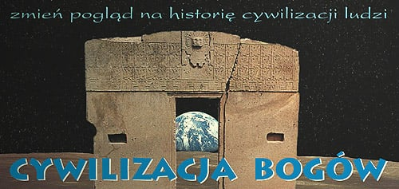

Strona główna › Czytelnia
Czytelnia

Strona tytułowa · 2004–2007
Uwierz we własny rozum
Jeśli chcesz spróbować zapomnieć na dłuższą chwilę o tym, czego nauczyłeś się w szkole lub podobnie jak ja, wątpisz w prawdziwość historii naszej cywilizacji, to
czytaj dalej ↓oryginalna strona tytułowa →
„Zwrócić na coś uwagę większości, znaczy pomóc zdrowemu rozsądkowi wpaść na właściwy ślad” – G. E. Lessing, motto z menu strony
Cywilizacja Bogów 38 artykułów · 39 stron
-
 WstępAutor przedstawia założenia całego działu. Twierdzi, że oficjalna historia i teoria ewolucji są kontrolowane przez grupę naukowców broniących swojego monopolu, a początki cywilizacji opisują błędnie. Proponuje hipotezę o dawnej wysoko rozwiniętej „cywilizacji Bogów”, cyklicznych kataklizmach (wielkich uskokach skorupy ziemskiej), realnej Atlantydzie i błędnym przypisywaniu starożytnym ludom budowli, których nie mogły zbudować. Ostrzega, że kolejny globalny kataklizm jest nieuchronny, a ludzkość jest na niego nieprzygotowana.🎧 w podcaście
WstępAutor przedstawia założenia całego działu. Twierdzi, że oficjalna historia i teoria ewolucji są kontrolowane przez grupę naukowców broniących swojego monopolu, a początki cywilizacji opisują błędnie. Proponuje hipotezę o dawnej wysoko rozwiniętej „cywilizacji Bogów”, cyklicznych kataklizmach (wielkich uskokach skorupy ziemskiej), realnej Atlantydzie i błędnym przypisywaniu starożytnym ludom budowli, których nie mogły zbudować. Ostrzega, że kolejny globalny kataklizm jest nieuchronny, a ludzkość jest na niego nieprzygotowana.🎧 w podcaście -
 PotopAutor zestawia starożytne przekazy o potopie (biblijny, sumeryjski, grecki, mezoamerykańskie, Oera Linda Boek, Kronika Akakor, Indian Hopi) i dochodzi do wniosku, że potopy były co najmniej kilka, a ostatni nastąpił ok. 12,5 tys. lat temu. Odrzuca jako przyczynę zbliżenie wielkiego ciała niebieskiego i uderzenie meteorytu, a opowiada się za hipotezą Hapgooda o nagłym przesunięciu skorupy ziemskiej. Za Caseyem Wadowskim przyjmuje, że kataklizm przewidziała wysoko rozwinięta cywilizacja Bogów-Nauczycieli, która zabezpieczyła wiedzę i pomagała w odbudowie. Twierdzi, że skorupa Ziemi nadal się nie ustabilizowała i kolejny kataklizm jest możliwy, a nauka tę hipotezę ignoruje.🎧 w podcaście
PotopAutor zestawia starożytne przekazy o potopie (biblijny, sumeryjski, grecki, mezoamerykańskie, Oera Linda Boek, Kronika Akakor, Indian Hopi) i dochodzi do wniosku, że potopy były co najmniej kilka, a ostatni nastąpił ok. 12,5 tys. lat temu. Odrzuca jako przyczynę zbliżenie wielkiego ciała niebieskiego i uderzenie meteorytu, a opowiada się za hipotezą Hapgooda o nagłym przesunięciu skorupy ziemskiej. Za Caseyem Wadowskim przyjmuje, że kataklizm przewidziała wysoko rozwinięta cywilizacja Bogów-Nauczycieli, która zabezpieczyła wiedzę i pomagała w odbudowie. Twierdzi, że skorupa Ziemi nadal się nie ustabilizowała i kolejny kataklizm jest możliwy, a nauka tę hipotezę ignoruje.🎧 w podcaście -
 Wielki uskok...Autor broni hipotezy Charlesa Hapgooda o nagłym przesunięciu całej skorupy ziemskiej pod wpływem nagromadzonego lodu na biegunie i uważa, że ostatnie takie zdarzenie miało miejsce ok. 12,5 tys. lat temu. Za ślady uskoku uznaje zniszczenia starożytnych budowli, zasypane ruiny, słone jeziora śródlądowe, nietypowe odchylenia osi budowli od północy oraz dane z Grenlandii. Twierdzi, że starożytna wiedza astronomiczna została przekazana jako ostrzeżenie przed kolejnym kataklizmem, a data 23 grudnia 2012 może dotyczyć raczej zdarzenia dawnego niż przyszłego. Zaznacza, że nie jest geofizykiem, a część obliczeń jest orientacyjna.🎧 odcinek 2 niedziela, 15 listopada 2026
Wielki uskok...Autor broni hipotezy Charlesa Hapgooda o nagłym przesunięciu całej skorupy ziemskiej pod wpływem nagromadzonego lodu na biegunie i uważa, że ostatnie takie zdarzenie miało miejsce ok. 12,5 tys. lat temu. Za ślady uskoku uznaje zniszczenia starożytnych budowli, zasypane ruiny, słone jeziora śródlądowe, nietypowe odchylenia osi budowli od północy oraz dane z Grenlandii. Twierdzi, że starożytna wiedza astronomiczna została przekazana jako ostrzeżenie przed kolejnym kataklizmem, a data 23 grudnia 2012 może dotyczyć raczej zdarzenia dawnego niż przyszłego. Zaznacza, że nie jest geofizykiem, a część obliczeń jest orientacyjna.🎧 odcinek 2 niedziela, 15 listopada 2026 -
 52 lataAutor omawia 52-letni cykl kalendarza Majów (tzolkin i haab, data 4-Ahau 8-Cumhu) na tle interpretacji Ericha von Dänikena, według którego cykl odpowiada obiegowi hipotetycznej Planety X. Nie zgadza się z wnioskiem o spotkaniu z bogami i proponuje, że Majowie bali się upadku planetoid z „oczka” pierścienia szczątków dawnej planety, o czym ostrzegli ich bogowie kalendarzem. Krytykuje naukowe sposoby liczenia kalendarza i przedstawia własne, orientacyjne rachunki. Na koniec wiąże te obawy ze współczesnymi doniesieniami o planetoidach i asteroidzie 2004 MN4, sugerując, że astronomowie nie dość poważnie traktują zagrożenie.🎧 odcinek 3 niedziela, 22 listopada 2026
52 lataAutor omawia 52-letni cykl kalendarza Majów (tzolkin i haab, data 4-Ahau 8-Cumhu) na tle interpretacji Ericha von Dänikena, według którego cykl odpowiada obiegowi hipotetycznej Planety X. Nie zgadza się z wnioskiem o spotkaniu z bogami i proponuje, że Majowie bali się upadku planetoid z „oczka” pierścienia szczątków dawnej planety, o czym ostrzegli ich bogowie kalendarzem. Krytykuje naukowe sposoby liczenia kalendarza i przedstawia własne, orientacyjne rachunki. Na koniec wiąże te obawy ze współczesnymi doniesieniami o planetoidach i asteroidzie 2004 MN4, sugerując, że astronomowie nie dość poważnie traktują zagrożenie.🎧 odcinek 3 niedziela, 22 listopada 2026 -
 ChronologiaAutor zestawia starożytne rachuby czasu (listy królów sumeryjskich i egipskich, Herodot, Diodor, Platon, kalendarze Mezoameryki, indyjskie Yugi) i twierdzi, że sięgają one dziesiątek i setek tysięcy lat, a więc znacznie dalej niż oficjalna historia. Na tej podstawie buduje własną chronologię: przybycie cywilizacji Bogów ok. 450 tys. lat temu, potop ok. 37 tys. lat temu, ostatni kataklizm ok. 12,5 tys. lat temu, po którym ludzie zostali sami. Porównuje biblijny opis stworzenia z podziałem naukowym, krytykuje darwinizm i metody datowania, popiera hipotezy Sitchina o Tiamat oraz przedstawia własny podział dziejów Ziemi na pięć epok. Przytacza też znaleziska „nie na swoim miejscu” jako dowód obecności istot rozumnych w bardzo dawnych warstwach.🎧 odcinek 4 niedziela, 29 listopada 2026
ChronologiaAutor zestawia starożytne rachuby czasu (listy królów sumeryjskich i egipskich, Herodot, Diodor, Platon, kalendarze Mezoameryki, indyjskie Yugi) i twierdzi, że sięgają one dziesiątek i setek tysięcy lat, a więc znacznie dalej niż oficjalna historia. Na tej podstawie buduje własną chronologię: przybycie cywilizacji Bogów ok. 450 tys. lat temu, potop ok. 37 tys. lat temu, ostatni kataklizm ok. 12,5 tys. lat temu, po którym ludzie zostali sami. Porównuje biblijny opis stworzenia z podziałem naukowym, krytykuje darwinizm i metody datowania, popiera hipotezy Sitchina o Tiamat oraz przedstawia własny podział dziejów Ziemi na pięć epok. Przytacza też znaleziska „nie na swoim miejscu” jako dowód obecności istot rozumnych w bardzo dawnych warstwach.🎧 odcinek 4 niedziela, 29 listopada 2026 -
 Jaka cywilizacjaObszerny tekst, w którym autor przedstawia hipotezę o dawnej wysoko rozwiniętej cywilizacji Bogów, która stworzyła człowieka, kolonizowała Ziemię, zbudowała największe starożytne budowle i opuściła planetę przed ostatnim kataklizmem. Krytykuje darwinizm i oficjalną historię starożytną, wskazuje na ślady olbrzymów, „długouchych” i ruin zniszczonych przez trzęsienia, a składanie ofiar z ludzi tłumaczy jako redukcję populacji dokonywaną przez Bogów. Za podstawę przyjmuje przekazy Sumerów, Biblii, ksiąg Henocha i Mezoameryki, a życie na Ziemi wiąże z zasianiem z kosmosu po kosmicznej katastrofie Tiamat. Autor zaznacza, że hipoteza jest jego własną propozycją, której nie może zweryfikować.🎧 odcinek 5 niedziela, 6 grudnia 2026
Jaka cywilizacjaObszerny tekst, w którym autor przedstawia hipotezę o dawnej wysoko rozwiniętej cywilizacji Bogów, która stworzyła człowieka, kolonizowała Ziemię, zbudowała największe starożytne budowle i opuściła planetę przed ostatnim kataklizmem. Krytykuje darwinizm i oficjalną historię starożytną, wskazuje na ślady olbrzymów, „długouchych” i ruin zniszczonych przez trzęsienia, a składanie ofiar z ludzi tłumaczy jako redukcję populacji dokonywaną przez Bogów. Za podstawę przyjmuje przekazy Sumerów, Biblii, ksiąg Henocha i Mezoameryki, a życie na Ziemi wiąże z zasianiem z kosmosu po kosmicznej katastrofie Tiamat. Autor zaznacza, że hipoteza jest jego własną propozycją, której nie może zweryfikować.🎧 odcinek 5 niedziela, 6 grudnia 2026 -
 Kto zbudował?Autor przegląda megalityczne i skalne budowle z całego świata (dolmeny, Egipt, Baalbek, Mykeny, Peru, Tiahuanaco, Malta, Stonehenge, Tonga, Petra, Indie, Wielki Mur) i uznaje, że ich wielkość i precyzja przekraczają możliwości ludzi z epoki kamienia. Krytykuje oficjalne wyjaśnienia (grobowce, ołtarze, ręczne szlifowanie, metody budowy piramid), datowanie węglem i założenie liniowego postępu. Twierdzi, że budowli tych dokonała wspólna ogólnoświatowa technologia cywilizacji Bogów sprzed kataklizmu ok. 12,5 tys. lat temu, a zniszczenia przypisuje trzęsieniom i tsunami. Wielki Mur Chiński i budowle Petry uznaje za starsze niż ich oficjalni budowniczowie.🎧 odcinek 6 niedziela, 13 grudnia 2026
Kto zbudował?Autor przegląda megalityczne i skalne budowle z całego świata (dolmeny, Egipt, Baalbek, Mykeny, Peru, Tiahuanaco, Malta, Stonehenge, Tonga, Petra, Indie, Wielki Mur) i uznaje, że ich wielkość i precyzja przekraczają możliwości ludzi z epoki kamienia. Krytykuje oficjalne wyjaśnienia (grobowce, ołtarze, ręczne szlifowanie, metody budowy piramid), datowanie węglem i założenie liniowego postępu. Twierdzi, że budowli tych dokonała wspólna ogólnoświatowa technologia cywilizacji Bogów sprzed kataklizmu ok. 12,5 tys. lat temu, a zniszczenia przypisuje trzęsieniom i tsunami. Wielki Mur Chiński i budowle Petry uznaje za starsze niż ich oficjalni budowniczowie.🎧 odcinek 6 niedziela, 13 grudnia 2026 -
 Piramidy w GizaAutor zestawia relacje arabskich i greckich pisarzy o piramidach, hipotezy Bauvala (układ Oriona) i geologiczne badania Westa i Schocha nad erozją Sfinksa. Wyciąga wniosek, że piramidy i Sfinks są znacznie starsze, niż twierdzi egiptologia, i zostały zbudowane przed potopem w celu zabezpieczenia wiedzy lub jako obiekt techniczny (np. hydrotechniczny), a nie jako grobowce. Proponuje, że kierunki kompleksu zmieniły się wskutek wielkiego uskoku skorupy ziemskiej, a Sfinks mógł być szakalem-Anubisem z później przerzeźbioną głową. Ostro krytykuje Zahiego Hawassa i oficjalną egiptologię za pomijanie dowodów i hamowanie badań.🎧 odcinek 7 niedziela, 20 grudnia 2026
Piramidy w GizaAutor zestawia relacje arabskich i greckich pisarzy o piramidach, hipotezy Bauvala (układ Oriona) i geologiczne badania Westa i Schocha nad erozją Sfinksa. Wyciąga wniosek, że piramidy i Sfinks są znacznie starsze, niż twierdzi egiptologia, i zostały zbudowane przed potopem w celu zabezpieczenia wiedzy lub jako obiekt techniczny (np. hydrotechniczny), a nie jako grobowce. Proponuje, że kierunki kompleksu zmieniły się wskutek wielkiego uskoku skorupy ziemskiej, a Sfinks mógł być szakalem-Anubisem z później przerzeźbioną głową. Ostro krytykuje Zahiego Hawassa i oficjalną egiptologię za pomijanie dowodów i hamowanie badań.🎧 odcinek 7 niedziela, 20 grudnia 2026 -
 Jezioro MojrisaAutor zestawia relacje Herodota, Diodora, Strabona i Pliniusza o labiryncie i jeziorze Mojrisa i uznaje jezioro za gigantyczny zbiornik retencyjny, który regulował wylewy Nilu. Na zdjęciach satelitarnych próbuje wskazać jego prawdopodobny zarys i położenie labiryntu w okolicy Fajum. Twierdzi, że piramidy, mastaby i podziemne serapea nie były grobowcami, lecz „przemysłowymi” centrami energetycznymi i magazynami niebezpiecznego paliwa, zbudowanymi przez zaginioną cywilizację Bogów. Według niego budowle powstały między 37 a 12,5 tysiącami lat temu, a zniszczył je kataklizm sprzed ok. 12,5 tys. lat; dzisiejsza egiptologia, jego zdaniem, błędnie przypisuje je ludziom. Tekst ma charakter hipotezy, którą autor sam określa jako „bajkę” i zachętę do badań inżynierskich.🎧 odcinek 8 niedziela, 27 grudnia 2026
Jezioro MojrisaAutor zestawia relacje Herodota, Diodora, Strabona i Pliniusza o labiryncie i jeziorze Mojrisa i uznaje jezioro za gigantyczny zbiornik retencyjny, który regulował wylewy Nilu. Na zdjęciach satelitarnych próbuje wskazać jego prawdopodobny zarys i położenie labiryntu w okolicy Fajum. Twierdzi, że piramidy, mastaby i podziemne serapea nie były grobowcami, lecz „przemysłowymi” centrami energetycznymi i magazynami niebezpiecznego paliwa, zbudowanymi przez zaginioną cywilizację Bogów. Według niego budowle powstały między 37 a 12,5 tysiącami lat temu, a zniszczył je kataklizm sprzed ok. 12,5 tys. lat; dzisiejsza egiptologia, jego zdaniem, błędnie przypisuje je ludziom. Tekst ma charakter hipotezy, którą autor sam określa jako „bajkę” i zachętę do badań inżynierskich.🎧 odcinek 8 niedziela, 27 grudnia 2026 -
 TiahuanacoAutor zestawia oficjalne informacje o Tiahuanaco (kultura z III–XII w. n.e.) z relacjami kronikarzy, legendami Indian i opisami Hancocka, Posnansky'ego i Kissa. Kwestionuje wyjaśnienie, że jezioro Titicaca jest zatoką morską wypiętrzoną razem z Andami, i proponuje zamiast tego skutki kataklizmu sprzed ok. 12,5 tys. lat (przesunięcie skorupy ziemskiej o ok. 3000 km i megatsunami). Twierdzi, że Tiahuanaco, Apacama i Puma Punku zbudowała cywilizacja Bogów jako centrum przemysłowo-hydroenergetyczne, a precyzja obróbki kamienia wskazuje na technikę nieznaną ludziom tamtych czasów. Porównuje kompleks do Gizy i jeziora Mojrisa oraz krytykuje sposób, w jaki książka Hancocka interpretuje rzeźby.🎧 odcinek 9 niedziela, 3 stycznia 2027
TiahuanacoAutor zestawia oficjalne informacje o Tiahuanaco (kultura z III–XII w. n.e.) z relacjami kronikarzy, legendami Indian i opisami Hancocka, Posnansky'ego i Kissa. Kwestionuje wyjaśnienie, że jezioro Titicaca jest zatoką morską wypiętrzoną razem z Andami, i proponuje zamiast tego skutki kataklizmu sprzed ok. 12,5 tys. lat (przesunięcie skorupy ziemskiej o ok. 3000 km i megatsunami). Twierdzi, że Tiahuanaco, Apacama i Puma Punku zbudowała cywilizacja Bogów jako centrum przemysłowo-hydroenergetyczne, a precyzja obróbki kamienia wskazuje na technikę nieznaną ludziom tamtych czasów. Porównuje kompleks do Gizy i jeziora Mojrisa oraz krytykuje sposób, w jaki książka Hancocka interpretuje rzeźby.🎧 odcinek 9 niedziela, 3 stycznia 2027 -
 Bogowie wodyAutor krytykuje współczesną astronomię i archeologię za brak spójnych teorii i odrzucanie przekazów starożytnych, a następnie streszcza sumeryjską opowieść (za Sitchinem) o Tiamat, Mardukku i powstaniu Ziemi oraz o stworzeniu człowieka przez Bogów. Opisuje współistnienie dwóch cywilizacji: Bogów, którzy rządzą, i ludzi, którzy im służą. Twierdzi, że Bogowie budowali na Ziemi ośrodki energetyczno-hydrotechniczne (Egipt, Tiahuanaco, Angkor, Teotihuacan, ziggurat w Mezopotamii, miasta doliny Indusu, kanały Nazca), a kataklizm sprzed ok. 12,5 tys. lat je zniszczył. Uważa więc, że to, co uczeni nazywają świątyniami i grobowcami, było urządzeniami do dystrybucji wody i energii. Dodaje rozważania o petroglifach jako zapisie widzianych przez ludzi istot i techniki Bogów.🎧 odcinek 10 niedziela, 10 stycznia 2027
Bogowie wodyAutor krytykuje współczesną astronomię i archeologię za brak spójnych teorii i odrzucanie przekazów starożytnych, a następnie streszcza sumeryjską opowieść (za Sitchinem) o Tiamat, Mardukku i powstaniu Ziemi oraz o stworzeniu człowieka przez Bogów. Opisuje współistnienie dwóch cywilizacji: Bogów, którzy rządzą, i ludzi, którzy im służą. Twierdzi, że Bogowie budowali na Ziemi ośrodki energetyczno-hydrotechniczne (Egipt, Tiahuanaco, Angkor, Teotihuacan, ziggurat w Mezopotamii, miasta doliny Indusu, kanały Nazca), a kataklizm sprzed ok. 12,5 tys. lat je zniszczył. Uważa więc, że to, co uczeni nazywają świątyniami i grobowcami, było urządzeniami do dystrybucji wody i energii. Dodaje rozważania o petroglifach jako zapisie widzianych przez ludzi istot i techniki Bogów.🎧 odcinek 10 niedziela, 10 stycznia 2027 -
 AtlantydaAutor omawia relację Platona z dialogów Kritias i Timajos oraz podobne opisy kataklizmów w źródłach mezoamerykańskich i fryzyjskich, uznając, że Platona należy brać dosłownie. Wskazuje na poszlaki (próbki z dna Atlantyku, mapy starożytne, styl budownictwa, akwedukty i mosty) i umieszcza Atlantydę na Atlantyku między Gibraltarem a Ameryką Północną, w rejonie Azorów. Zagładę wiąże z kataklizmem sprzed ok. 12,5 tys. lat, czyli „wielkim uskokiem skorupy ziemskiej” Hapgooda, który przesunął skorupę o ok. 3000 km i wywołał tsunami. Według autora Atlantydę założyła cywilizacja Bogów, a jej kolonie to m.in. Etruskowie, Fenicjanie i Baskowie. Dodaje, że oficjalna nauka nie szuka Atlantydy, bo jest to niewygodne dla utartego schematu historii.🎧 odcinek 11 niedziela, 17 stycznia 2027
AtlantydaAutor omawia relację Platona z dialogów Kritias i Timajos oraz podobne opisy kataklizmów w źródłach mezoamerykańskich i fryzyjskich, uznając, że Platona należy brać dosłownie. Wskazuje na poszlaki (próbki z dna Atlantyku, mapy starożytne, styl budownictwa, akwedukty i mosty) i umieszcza Atlantydę na Atlantyku między Gibraltarem a Ameryką Północną, w rejonie Azorów. Zagładę wiąże z kataklizmem sprzed ok. 12,5 tys. lat, czyli „wielkim uskokiem skorupy ziemskiej” Hapgooda, który przesunął skorupę o ok. 3000 km i wywołał tsunami. Według autora Atlantydę założyła cywilizacja Bogów, a jej kolonie to m.in. Etruskowie, Fenicjanie i Baskowie. Dodaje, że oficjalna nauka nie szuka Atlantydy, bo jest to niewygodne dla utartego schematu historii.🎧 odcinek 11 niedziela, 17 stycznia 2027 -
 Oszustwo wszechczasówAutor kwestionuje, że starożytni Rzymianie zbudowali amfiteatry, akwedukty, mosty, drogi, termy, mur Hadriana i inne budowle, które im się przypisuje. Argumentuje, że Rzym był przede wszystkim systemem polityczno-wojskowym i grabieżczym, bez zaplecza technicznego i szkolnictwa, a datowanie budowli opiera się na skorupach i inskrypcjach. Wskazuje na braki w źródłach (trasy marszów, architekci, skład „rzymskiego cementu”), logistykę i zniszczenia wszystkich budowli. Twierdzi, że budowle te pochodzą z cywilizacji Atlantydy sprzed ok. 12,5 tys. lat (Ruma jako jej ośrodek), a Rzymianie tylko przejęli i przerobili istniejące ruiny. Tekst ma polemiczny, ironiczny ton i kończy się wezwaniem do nowego pokolenia historyków.🎧 odcinek 12 niedziela, 24 stycznia 2027
Oszustwo wszechczasówAutor kwestionuje, że starożytni Rzymianie zbudowali amfiteatry, akwedukty, mosty, drogi, termy, mur Hadriana i inne budowle, które im się przypisuje. Argumentuje, że Rzym był przede wszystkim systemem polityczno-wojskowym i grabieżczym, bez zaplecza technicznego i szkolnictwa, a datowanie budowli opiera się na skorupach i inskrypcjach. Wskazuje na braki w źródłach (trasy marszów, architekci, skład „rzymskiego cementu”), logistykę i zniszczenia wszystkich budowli. Twierdzi, że budowle te pochodzą z cywilizacji Atlantydy sprzed ok. 12,5 tys. lat (Ruma jako jej ośrodek), a Rzymianie tylko przejęli i przerobili istniejące ruiny. Tekst ma polemiczny, ironiczny ton i kończy się wezwaniem do nowego pokolenia historyków.🎧 odcinek 12 niedziela, 24 stycznia 2027 -
 Nauczyciele RzymuAutor twierdzi, że Celtowie i inni mieszkańcy Europy nie przybyli ze stepów Azji, lecz są autochtonicznymi potomkami „wspólnoty Atlantydy”, która przetrwała kataklizm sprzed 12,5 tys. lat. Powołuje się na starożytne mapy, które jego zdaniem odzwierciedlają Europę sprzed kataklizmu (bez Bałtyku), oraz na badania genetyczne. Uważa, że kamienne budowle i rzeźby przypisywane Rzymianom, Celtom, średniowiecznym zakonom i Polakom pochodzą z dawnej cywilizacji, a Rzym przejął je, a nawet alfabet łaciński od Celtów i Etrusków. Rzym, Kościół rzymski i inne siły miały niszczyć nauczycieli, czyli Celtów, Katarów, Templariuszy i Słowian. Tekst kończy cykl „Cywilizacja Bogów” wezwaniem do przepisania historii.🎧 odcinek 13 niedziela, 31 stycznia 2027
Nauczyciele RzymuAutor twierdzi, że Celtowie i inni mieszkańcy Europy nie przybyli ze stepów Azji, lecz są autochtonicznymi potomkami „wspólnoty Atlantydy”, która przetrwała kataklizm sprzed 12,5 tys. lat. Powołuje się na starożytne mapy, które jego zdaniem odzwierciedlają Europę sprzed kataklizmu (bez Bałtyku), oraz na badania genetyczne. Uważa, że kamienne budowle i rzeźby przypisywane Rzymianom, Celtom, średniowiecznym zakonom i Polakom pochodzą z dawnej cywilizacji, a Rzym przejął je, a nawet alfabet łaciński od Celtów i Etrusków. Rzym, Kościół rzymski i inne siły miały niszczyć nauczycieli, czyli Celtów, Katarów, Templariuszy i Słowian. Tekst kończy cykl „Cywilizacja Bogów” wezwaniem do przepisania historii.🎧 odcinek 13 niedziela, 31 stycznia 2027 -
 Czy przetrwamy?Autor odpowiada, że nasza cywilizacja nie przetrwa, jeśli nie zmieni sposobu myślenia, bo rządzą nią ludzie nastawieni na bogactwo, a nauka lekceważy starożytne ostrzeżenia i hipotezę Hapgooda. Wymienia trzy zagrożenia: uderzenie obiektu z kosmosu, „wielki uskok skorupy ziemskiej” oraz samozagładę w wojnie religijnej lub o wodę. Zarzuca nauce, że szuka życia w kosmosie zamiast zagrożeń dla Ziemi, i przywołuje kalendarz Majów, Kronikę z Akakor i opis Platona jako ostrzeżenia. Proponuje przygotowania: zapasy, „bank nasienia” i „bank wiedzy”, badania zagrożeń oraz ponowne czytanie przekazów starożytnych, zaznaczając, że nie chce straszyć, lecz uświadomić ryzyko.🎧 odcinek 14 niedziela, 7 lutego 2027
Czy przetrwamy?Autor odpowiada, że nasza cywilizacja nie przetrwa, jeśli nie zmieni sposobu myślenia, bo rządzą nią ludzie nastawieni na bogactwo, a nauka lekceważy starożytne ostrzeżenia i hipotezę Hapgooda. Wymienia trzy zagrożenia: uderzenie obiektu z kosmosu, „wielki uskok skorupy ziemskiej” oraz samozagładę w wojnie religijnej lub o wodę. Zarzuca nauce, że szuka życia w kosmosie zamiast zagrożeń dla Ziemi, i przywołuje kalendarz Majów, Kronikę z Akakor i opis Platona jako ostrzeżenia. Proponuje przygotowania: zapasy, „bank nasienia” i „bank wiedzy”, badania zagrożeń oraz ponowne czytanie przekazów starożytnych, zaznaczając, że nie chce straszyć, lecz uświadomić ryzyko.🎧 odcinek 14 niedziela, 7 lutego 2027 -
 Cuda epoki upadkuAutor zestawia budowę Pałacu Kultury i Nauki z technicznymi możliwościami średniowiecza i pyta, jak w epoce bez dźwigów i stalowych lin powstały tysiące kamiennych zamków, od Bliskiego Wschodu (Krak des Chevaliers, Margat, Aleppo, Kerak) po Europę (Mont-Saint-Michel). Zwraca uwagę na brak tynków, wody pitnej, dokumentów budowy i na ich dziwną architekturę, uznając oficjalne datowania za nieprzekonujące. Autor twierdzi, że zamki te nie były siedzibami możnych, lecz magazynami lub obiektami „przemysłowymi” odziedziczonymi po dawnej cywilizacji, a zniszczenia wynikają z kataklizmu („wielkiego uskoku skorupy ziemskiej”) sprzed ok. 12,5 tys. lat. W dodatku przytacza hipotezę Herberta Illiga o wymyślonych 297 latach wczesnego średniowiecza jako możliwe wyjaśnienie fałszerstw historii.🎧 odcinek 15 niedziela, 14 lutego 2027
Cuda epoki upadkuAutor zestawia budowę Pałacu Kultury i Nauki z technicznymi możliwościami średniowiecza i pyta, jak w epoce bez dźwigów i stalowych lin powstały tysiące kamiennych zamków, od Bliskiego Wschodu (Krak des Chevaliers, Margat, Aleppo, Kerak) po Europę (Mont-Saint-Michel). Zwraca uwagę na brak tynków, wody pitnej, dokumentów budowy i na ich dziwną architekturę, uznając oficjalne datowania za nieprzekonujące. Autor twierdzi, że zamki te nie były siedzibami możnych, lecz magazynami lub obiektami „przemysłowymi” odziedziczonymi po dawnej cywilizacji, a zniszczenia wynikają z kataklizmu („wielkiego uskoku skorupy ziemskiej”) sprzed ok. 12,5 tys. lat. W dodatku przytacza hipotezę Herberta Illiga o wymyślonych 297 latach wczesnego średniowiecza jako możliwe wyjaśnienie fałszerstw historii.🎧 odcinek 15 niedziela, 14 lutego 2027 -
 Kazimierz III cudotwórcaAutor analizuje polskie zamki (statystyka ok. 359 obiektów z XIII–XV w.) i kwestionuje tezę, że Kazimierz Wielki „zastał drewnianą, zostawił murowaną”, a Krzyżacy zbudowali Malbork w kilka lat. Twierdzi, że ani król, ani zakon nie mieli bazy ekonomicznej, specjalistów i techniki do takich budów, brak też dokumentów, a zamki (m.in. Wawel, Malbork) to ruiny po wcześniejszej cywilizacji, odkopane i przerobione. Krytykuje datowanie według stylów, zaprawy, cegły i monet oraz historyków, którzy według niego wiek budowli ustalają z przypadkowych znalezisk. Uważa, że rok 966 oznaczał utratę polskiej historii i pisma, i wiąże zniszczenia z kataklizmami, w tym z tym sprzed ok. 12,5 tys. lat, przy czym zaznacza, że to „głośne myślenie”.🎧 odcinek 16 niedziela, 21 lutego 2027
Kazimierz III cudotwórcaAutor analizuje polskie zamki (statystyka ok. 359 obiektów z XIII–XV w.) i kwestionuje tezę, że Kazimierz Wielki „zastał drewnianą, zostawił murowaną”, a Krzyżacy zbudowali Malbork w kilka lat. Twierdzi, że ani król, ani zakon nie mieli bazy ekonomicznej, specjalistów i techniki do takich budów, brak też dokumentów, a zamki (m.in. Wawel, Malbork) to ruiny po wcześniejszej cywilizacji, odkopane i przerobione. Krytykuje datowanie według stylów, zaprawy, cegły i monet oraz historyków, którzy według niego wiek budowli ustalają z przypadkowych znalezisk. Uważa, że rok 966 oznaczał utratę polskiej historii i pisma, i wiąże zniszczenia z kataklizmami, w tym z tym sprzed ok. 12,5 tys. lat, przy czym zaznacza, że to „głośne myślenie”.🎧 odcinek 16 niedziela, 21 lutego 2027 -
 Dziwne i zagadkoweZbiór krótkich notatek o rzekomo niewyjaśnionych podobieństwach i anomaliach w zabytkach z różnych kontynentów: śladach na kamieniach, wierconych otworach, sarkofagach, łukach i mostach, terasach, murach z dopasowanych bloków, symbolach (lwy, węże, korony), kolejnych palcach u rzeźb, rytach z Ica, nieznanych strukturach w pustyni koło Giza czy w Sudanie. Autor odrzuca wyjaśnienie „koincydencją” i oficjalną archeologię, twierdząc, że wiele obiektów pochodzi z czasów sprzed kataklizmu ok. 12,5 tys. lat temu, a ich twórcami byli „Bogowie” lub zaawansowana cywilizacja z techniką nieznaną dziś (wtrysk kamienia, specjalna energia, latające „węże”). Wiele tez jest sformułowanych jako pytania i przypuszczenia autora, a nie dowody.🎧 odcinek 17 niedziela, 28 lutego 2027
Dziwne i zagadkoweZbiór krótkich notatek o rzekomo niewyjaśnionych podobieństwach i anomaliach w zabytkach z różnych kontynentów: śladach na kamieniach, wierconych otworach, sarkofagach, łukach i mostach, terasach, murach z dopasowanych bloków, symbolach (lwy, węże, korony), kolejnych palcach u rzeźb, rytach z Ica, nieznanych strukturach w pustyni koło Giza czy w Sudanie. Autor odrzuca wyjaśnienie „koincydencją” i oficjalną archeologię, twierdząc, że wiele obiektów pochodzi z czasów sprzed kataklizmu ok. 12,5 tys. lat temu, a ich twórcami byli „Bogowie” lub zaawansowana cywilizacja z techniką nieznaną dziś (wtrysk kamienia, specjalna energia, latające „węże”). Wiele tez jest sformułowanych jako pytania i przypuszczenia autora, a nie dowody.🎧 odcinek 17 niedziela, 28 lutego 2027 -
 Uczona błazenadaSatyryczny zbiór krótkich felietonów, w których autor wyśmiewa wybrane (zwykle zanonimizowane) hipotezy naukowców i popularyzatorów: o budowie piramid, rzeźbieniu głów olmeckich, pochodzeniu wody na Ziemi z komet, ewolucji, znakach z Nazca, Stonehenge, hobbicie z Flores czy chodzeniu Jezusa po wodzie. Autor zestawia je z własnymi wyliczeniami i pytaniami technicznymi, pokazując, że wiele oficjalnych wyjaśnień jest nieprzemyślanych lub niedorzecznych. Tekst ma charakter ironiczny i jest pisany lekkim, żartobliwym językiem, a wnioskiem jest krytyka współczesnej nauki jako kosztownej i oderwanej od zdrowego rozsądku.🎧 odcinek 18 niedziela, 7 marca 2027
Uczona błazenadaSatyryczny zbiór krótkich felietonów, w których autor wyśmiewa wybrane (zwykle zanonimizowane) hipotezy naukowców i popularyzatorów: o budowie piramid, rzeźbieniu głów olmeckich, pochodzeniu wody na Ziemi z komet, ewolucji, znakach z Nazca, Stonehenge, hobbicie z Flores czy chodzeniu Jezusa po wodzie. Autor zestawia je z własnymi wyliczeniami i pytaniami technicznymi, pokazując, że wiele oficjalnych wyjaśnień jest nieprzemyślanych lub niedorzecznych. Tekst ma charakter ironiczny i jest pisany lekkim, żartobliwym językiem, a wnioskiem jest krytyka współczesnej nauki jako kosztownej i oderwanej od zdrowego rozsądku.🎧 odcinek 18 niedziela, 7 marca 2027 -
 Piramida w VisokoTekst relacjonuje początek badań wzgórza Visočica koło Visoko w Bośni, które Semir Osmanagić uznał za piramidę (Piramida Słońca) sprzed ok. 12 tys. lat, i zestawia doniesienia prasowe, opinie zwolenników (egipski geolog Barakat) i przeciwników (Harding, Hawass, bośniaccy archeolodzy, Pastuszka z Archeowieści). Autor komentuje je krytycznie wobec sceptyków, wskazując na uprzedzenie nauki, i przedstawia własną hipotezę: pod ziemią może kryć się kompleks przemysłowo-energetyczny zbudowany przez cywilizację sprzed kataklizmu 12,5 tys. lat, a Ilirowie nie mogli go postawić. Tekst jest niedokończony i kończy się zapowiedzią „c.d.n.”.🎧 odcinek 19 niedziela, 14 marca 2027
Piramida w VisokoTekst relacjonuje początek badań wzgórza Visočica koło Visoko w Bośni, które Semir Osmanagić uznał za piramidę (Piramida Słońca) sprzed ok. 12 tys. lat, i zestawia doniesienia prasowe, opinie zwolenników (egipski geolog Barakat) i przeciwników (Harding, Hawass, bośniaccy archeolodzy, Pastuszka z Archeowieści). Autor komentuje je krytycznie wobec sceptyków, wskazując na uprzedzenie nauki, i przedstawia własną hipotezę: pod ziemią może kryć się kompleks przemysłowo-energetyczny zbudowany przez cywilizację sprzed kataklizmu 12,5 tys. lat, a Ilirowie nie mogli go postawić. Tekst jest niedokończony i kończy się zapowiedzią „c.d.n.”.🎧 odcinek 19 niedziela, 14 marca 2027 -
Bogowie atomowych wojenTekst to obszerne fragmenty książki M. Jesenskiego w przekładzie W. Baranowicza (czyli R. K. Leśniakiewicza), uzupełnione dodatkami Mory, Sidniewy i Leśniakiewiczów. Autor twierdzi, że w odległej przeszłości (ok. 15–12 tys. lat temu) na Ziemi i innych planetach toczyła się globalna wojna z użyciem broni jądrowej, biologicznej i chemicznej, prowadzona przez zaawansowaną cywilizację Atlantydów. Jako dowody podaje opisy z Mahabharaty i sumeryjskich lamentacji, zeszklone mury fortec, radioaktywne szkielety z Mohendżo-Daro, anomalie rudy uranu w Oklo oraz krater Tapanui i Wyspę Wielkanocną. Według niego na orbicie krążą do dziś bojowe satelity tej cywilizacji, których spadki i wybuchy (np. Tunguska 1908, Hebrydy 1996) oraz „komety” średniowiecza miały powodować epidemie, a wirusy i bakterie (HIV, dżuma, cholera) są sztuczną bronią biologiczną. Autor dodaje, że UFO i istoty z uprowadzeń to biorobóty „martwych” maszyn, a w części Mory – że Księżyc został sprowadzony na orbitę, a ludzi stworzono eksperymentem genetycznym bogów. Wniosek ogólny: współczesna ludzkość powtarza błędy poprzedniej cywilizacji i grozi jej podobny los.🎧 odcinek 20 niedziela, 21 marca 2027
-
Nauka jutraTekst zawiera wywiad Marty Figury z rosyjskim fizykiem Gennadijem Szypowem oraz popularny artykuł o jego teorii próżni fizycznej. Szypow przedstawia próżnię jako żywą matrycę informacyjną, z której rodzi się materia, i opisuje pola torsyjne jako nośnik myśli i świadomości. Autor wywiadu wiąże z tym istnienie Boga jako Wyższego Umysłu, życie po śmierci, zbliżanie się nauki do religii oraz możliwość budowy napędów antygrawitacyjnych, łączności torsyjnej i nowej medycyny. Szypow ostrzega też, że technologie torsyjne mogą posłużyć jako broń, i twierdzi, że w ten sposób zginęła Atlantyda. Opowiada o odrzuceniu jego teorii przez oficjalną naukę i o własnych doświadczeniach z prototypami.🎧 odcinek 23 niedziela, 11 kwietnia 2027
-
 Tiamat i kometyAutor przedstawia oficjalną teorię powstania Układu Słonecznego i zestawia ją z sumeryjską kosmogonią w interpretacji Zecharii Sitchina, a następnie przechodzi po kolei przez planety, księżyce, planetoidy i komety, opatrując tabele danych krytycznymi komentarzami. Zarzuca nauce hipotezy oparte na słowach „prawdopodobnie”, niespójności i brak badań. Twierdzi, że planety powstały w kolejności opisanej przez Sumerów, a układ był początkowo „czysty”, zanim wtargnięcie planety Nibiru rozbiło Tiamat i wywołało bombardowanie. Z tego wyprowadza tezy o pochodzeniu wody, komet, planetoid, życia i pól magnetycznych oraz wzywa do sprawdzenia, czy starożytni mówili prawdę.🎧 odcinek 24 niedziela, 18 kwietnia 2027
Tiamat i kometyAutor przedstawia oficjalną teorię powstania Układu Słonecznego i zestawia ją z sumeryjską kosmogonią w interpretacji Zecharii Sitchina, a następnie przechodzi po kolei przez planety, księżyce, planetoidy i komety, opatrując tabele danych krytycznymi komentarzami. Zarzuca nauce hipotezy oparte na słowach „prawdopodobnie”, niespójności i brak badań. Twierdzi, że planety powstały w kolejności opisanej przez Sumerów, a układ był początkowo „czysty”, zanim wtargnięcie planety Nibiru rozbiło Tiamat i wywołało bombardowanie. Z tego wyprowadza tezy o pochodzeniu wody, komet, planetoid, życia i pól magnetycznych oraz wzywa do sprawdzenia, czy starożytni mówili prawdę.🎧 odcinek 24 niedziela, 18 kwietnia 2027 -
 Insygnia EgiptuAutor krytykuje oficjalną egiptologię i proponuje własną hipotezę dwóch cywilizacji: Bogów, którzy zasiedlili Egipt po potopie i zbudowali jego monumentalne budowle, oraz podporządkowanych im ludzi. Analizuje korony (atef, korony Górnego i Dolnego Egiptu), laski, brody, atrybuty nad głowami bogów, zodiak z Dendery oraz mity o Horusie, Ra i Ptahu, i odczytuje je jako symbole techniczne, informacyjne lub oznaczenia „specjalności” bogów. Mit o skrzydlatym dysku Horusa traktuje jako opis latającej broni. Twierdzi, że chronologia egiptologiczna jest błędna, a po kataklizmie sprzed ok. 12 tysięcy lat historię spisano na nowo i pomieszano epoki.🎧 odcinek 25 niedziela, 25 kwietnia 2027
Insygnia EgiptuAutor krytykuje oficjalną egiptologię i proponuje własną hipotezę dwóch cywilizacji: Bogów, którzy zasiedlili Egipt po potopie i zbudowali jego monumentalne budowle, oraz podporządkowanych im ludzi. Analizuje korony (atef, korony Górnego i Dolnego Egiptu), laski, brody, atrybuty nad głowami bogów, zodiak z Dendery oraz mity o Horusie, Ra i Ptahu, i odczytuje je jako symbole techniczne, informacyjne lub oznaczenia „specjalności” bogów. Mit o skrzydlatym dysku Horusa traktuje jako opis latającej broni. Twierdzi, że chronologia egiptologiczna jest błędna, a po kataklizmie sprzed ok. 12 tysięcy lat historię spisano na nowo i pomieszano epoki.🎧 odcinek 25 niedziela, 25 kwietnia 2027 -
 Machu PicchuAutor oprowadza czytelnika po Machu Picchu i kwestionuje oficjalne datowanie na ok. 1500 r. n.e. oraz tradycyjne nazwy obiektów (świątynie, zegar słoneczny). Zwraca uwagę na precyzję obróbki kamienia, trapezoidalne nisze z zaciekami, wycięcia, otwory i czopy, wyryte w skale siatki oraz kamienne tarasy chroniące przed trzęsieniem ziemi. Twierdzi, że miejsce nie miało charakteru sakralnego ani mieszkalnego, nie ma w nim cmentarzy ani kanalizacji, a obróbka kamienia wymagała nieznanej techniki. Wiąże opuszczenie miasta z trzęsieniem ziemi sprzed ok. 12,5 tys. lat i uznaje je za dzieło epoki, gdy Bogowie stąpali po ziemi.🎧 odcinek 26 niedziela, 2 maja 2027
Machu PicchuAutor oprowadza czytelnika po Machu Picchu i kwestionuje oficjalne datowanie na ok. 1500 r. n.e. oraz tradycyjne nazwy obiektów (świątynie, zegar słoneczny). Zwraca uwagę na precyzję obróbki kamienia, trapezoidalne nisze z zaciekami, wycięcia, otwory i czopy, wyryte w skale siatki oraz kamienne tarasy chroniące przed trzęsieniem ziemi. Twierdzi, że miejsce nie miało charakteru sakralnego ani mieszkalnego, nie ma w nim cmentarzy ani kanalizacji, a obróbka kamienia wymagała nieznanej techniki. Wiąże opuszczenie miasta z trzęsieniem ziemi sprzed ok. 12,5 tys. lat i uznaje je za dzieło epoki, gdy Bogowie stąpali po ziemi.🎧 odcinek 26 niedziela, 2 maja 2027 -
 SacsayhuamanAutor opisuje kompleks Sacsayhuaman koło Cusco, krytykuje powierzchowność badań archeologicznych i kwestionuje inkaskie pochodzenie budowli. Zwraca uwagę na gigantyczne, ściśle dopasowane bloki, zygzakowate mury, ślady na kamieniu, system tarasów i odwodnienia oraz podobieństwa do Cusco, Ollantaytambo i Machu Picchu. Proponuje, że kamień obrabiano techniką jego uplastyczniania i że obiekt był centrum przemysłowo-energetycznym wzniesionym przez cywilizację Bogów, wcześniej niż 12,5 tysięcy lat temu. Uważa, że wszystkie ośrodki tego regionu zniszczył jeden kataklizm, a nie służyły one do mieszkania.🎧 odcinek 27 niedziela, 9 maja 2027
SacsayhuamanAutor opisuje kompleks Sacsayhuaman koło Cusco, krytykuje powierzchowność badań archeologicznych i kwestionuje inkaskie pochodzenie budowli. Zwraca uwagę na gigantyczne, ściśle dopasowane bloki, zygzakowate mury, ślady na kamieniu, system tarasów i odwodnienia oraz podobieństwa do Cusco, Ollantaytambo i Machu Picchu. Proponuje, że kamień obrabiano techniką jego uplastyczniania i że obiekt był centrum przemysłowo-energetycznym wzniesionym przez cywilizację Bogów, wcześniej niż 12,5 tysięcy lat temu. Uważa, że wszystkie ośrodki tego regionu zniszczył jeden kataklizm, a nie służyły one do mieszkania.🎧 odcinek 27 niedziela, 9 maja 2027 -
 Indiański folklorAutor krytykuje sposób, w jaki napisano historię Ameryki Środkowej: na podstawie folkloru spisanego przez hiszpańskich kolonizatorów, bez znajomości pisma i bez niezależnych datowań. Przegląda piramidy, rzeźby, cenote, wizerunki Pierzastego Węża, obserwatoria astronomiczne, boiska do tlachtli oraz mury „rzymskich” akweduktów i proponuje ich reinterpretację. Twierdzi, że budowle powstały w ramach kolonizacji dokonanej przez cywilizację Bogów (z Atlantydy), że wąż Quetzalcoatla to pojazd techniczny, a kataklizm sprzed ok. 12,5 tys. lat zniszczył budowle, które później przypisano plemionom indiańskim. Kończy listą zarzutów wobec dzisiejszej archeologii.🎧 odcinek 28 niedziela, 16 maja 2027
Indiański folklorAutor krytykuje sposób, w jaki napisano historię Ameryki Środkowej: na podstawie folkloru spisanego przez hiszpańskich kolonizatorów, bez znajomości pisma i bez niezależnych datowań. Przegląda piramidy, rzeźby, cenote, wizerunki Pierzastego Węża, obserwatoria astronomiczne, boiska do tlachtli oraz mury „rzymskich” akweduktów i proponuje ich reinterpretację. Twierdzi, że budowle powstały w ramach kolonizacji dokonanej przez cywilizację Bogów (z Atlantydy), że wąż Quetzalcoatla to pojazd techniczny, a kataklizm sprzed ok. 12,5 tys. lat zniszczył budowle, które później przypisano plemionom indiańskim. Kończy listą zarzutów wobec dzisiejszej archeologii.🎧 odcinek 28 niedziela, 16 maja 2027 -
 Wielki uskok inaczejAutor proponuje mechanizm „wielkiego uskoku skorupy ziemskiej” oparty na hipotezie, że jądro Ziemi jest naturalnym reaktorem atomowym. Zakłada, że pole elektromagnetyczne powstaje w skorupie dzięki wyładowaniom atmosferycznym i że skorupa jest sprzężona z płaszczem jak sprzęgło hydrauliczne. Zmiany intensywności burz mogłyby powodować poślizg tego sprzęgła, czyli przesunięcie skorupy, zgodnie z hipotezą Hapgooda. Zastanawia się też nad wpływem pola magnetycznego i Księżyca na trzęsienia ziemi. Krytykuje naukę za brak badań i lekceważenie ostrzeżeń zapisanych w starożytnych przekazach (Noe, Henoch, Indianie, Akakor).🎧 odcinek 29 niedziela, 23 maja 2027
Wielki uskok inaczejAutor proponuje mechanizm „wielkiego uskoku skorupy ziemskiej” oparty na hipotezie, że jądro Ziemi jest naturalnym reaktorem atomowym. Zakłada, że pole elektromagnetyczne powstaje w skorupie dzięki wyładowaniom atmosferycznym i że skorupa jest sprzężona z płaszczem jak sprzęgło hydrauliczne. Zmiany intensywności burz mogłyby powodować poślizg tego sprzęgła, czyli przesunięcie skorupy, zgodnie z hipotezą Hapgooda. Zastanawia się też nad wpływem pola magnetycznego i Księżyca na trzęsienia ziemi. Krytykuje naukę za brak badań i lekceważenie ostrzeżeń zapisanych w starożytnych przekazach (Noe, Henoch, Indianie, Akakor).🎧 odcinek 29 niedziela, 23 maja 2027 -
 Kalendarz HenochaAutor analizuje astronomiczną część Księgi Henocha, interpretując „widzenia” jako relacje naocznego świadka, a aniołów ze „skrzydłami” jako opis latających urządzeń. Przytacza fragmenty o drodze Słońca przez sześć bram i dochodzi do wniosku, że rok sprzed potopu liczył 364 dni, a doba była nieco dłuższa niż dziś. Zmianę długości doby wiąże z „wielkim uskokiem skorupy ziemskiej” zapamiętanym jako potop. Zwraca uwagę, że współczesny projekt kalendarza 364-dniowego jest podobny do kalendarza Henocha, i konkluduje, że bogowie przekazali ludziom tylko wiedzę o Ziemi.🎧 odcinek 30 niedziela, 30 maja 2027
Kalendarz HenochaAutor analizuje astronomiczną część Księgi Henocha, interpretując „widzenia” jako relacje naocznego świadka, a aniołów ze „skrzydłami” jako opis latających urządzeń. Przytacza fragmenty o drodze Słońca przez sześć bram i dochodzi do wniosku, że rok sprzed potopu liczył 364 dni, a doba była nieco dłuższa niż dziś. Zmianę długości doby wiąże z „wielkim uskokiem skorupy ziemskiej” zapamiętanym jako potop. Zwraca uwagę, że współczesny projekt kalendarza 364-dniowego jest podobny do kalendarza Henocha, i konkluduje, że bogowie przekazali ludziom tylko wiedzę o Ziemi.🎧 odcinek 30 niedziela, 30 maja 2027 -
2012 - bać się?Autor komentuje i krytykuje fragmenty raportu „Nautilusa” o „Proroctwie Oriona” Patricka Geryla i Gino Ratinckxa, według którego 21 grudnia 2012 r. nastąpi przebiegunowanie Ziemi wywołane aktywnością Słońca. Zadaje szereg pytań o mechanizm pola magnetycznego Ziemi, rolę Słońca, wiarygodność datowania na 9792 p.n.e. i interpretacji tekstów Majów oraz Egipcjan. Opowiada się za hipotezą Hapgooda o poślizgu skorupy ziemskiej i za wewnętrznym reaktorem w jądrze Ziemi, ale odrzuca tezę o odwróceniu biegunów przez Słońce. Uznaje, że artykuł nie dowodzi „wielkiego przebiegunowania”, a prawdziwe zagrożenia to meteoryt i wielki uskok skorupy, choć nie można ich datować.🎧 odcinek 31 niedziela, 6 czerwca 2027
-
Nieznany NostradamusAutor przytacza z Internetu artykuł „marillion’a” o rzekomo niedawno odnalezionym rękopisie Nostradamusa („XII Centuria, numer 63”) i komentuje go własnymi wątpliwościami. Rękopis zawiera czterowiersze o powtórnym przyjściu Chrystusa, przybyszach z kosmosu i UFO, nowych napędach, kosmicznej imigracji, objawieniach Matki Boskiej, antychryście i 27-letniej wojnie od 1999 r., przebiegunowaniu, trzęsieniach ziemi i końcu świata. Interpretator czyta te teksty dosłownie jako zapowiedzi konkretnych wydarzeń, w tym przybycia kosmitów w roku 2012. Autor strony zwraca uwagę na dziwne okoliczności odnalezienia rękopisu, dowolność interpretacji i błędy rachunkowe, zachowując sceptycyzm.🎧 odcinek 32 niedziela, 13 czerwca 2027
-
 Dzisiejsza naukaTekst otwiera ostra krytyka środowiska naukowego, porównanego do mafii, a następnie zawiera artykuł Olgi Woźniak z „Przekroju” o oszustwach naukowych (Hwang, da Vinci, Newton, Mendel, Burt, Summerlin, Kammerer, Piltdown, Archaeoraptor) i sondaż „Nature” o nierzetelności badaczy. Autor strony dodaje własne wnioski: oszustwa naukowe są powszechne, medycyna i genetyka służą pieniądzom, a rzetelność nauki jest wątpliwa. Wymienia też Darwina, Einsteina, Hawassa i inne postaci jako przykłady fałszerstw lub plagiatu. Kończy cytatem z Księgi Henocha o szkodliwości wiedzy i apelem o uczciwość.🎧 odcinek 33 niedziela, 20 czerwca 2027
Dzisiejsza naukaTekst otwiera ostra krytyka środowiska naukowego, porównanego do mafii, a następnie zawiera artykuł Olgi Woźniak z „Przekroju” o oszustwach naukowych (Hwang, da Vinci, Newton, Mendel, Burt, Summerlin, Kammerer, Piltdown, Archaeoraptor) i sondaż „Nature” o nierzetelności badaczy. Autor strony dodaje własne wnioski: oszustwa naukowe są powszechne, medycyna i genetyka służą pieniądzom, a rzetelność nauki jest wątpliwa. Wymienia też Darwina, Einsteina, Hawassa i inne postaci jako przykłady fałszerstw lub plagiatu. Kończy cytatem z Księgi Henocha o szkodliwości wiedzy i apelem o uczciwość.🎧 odcinek 33 niedziela, 20 czerwca 2027 -
 26 maja 2006Strona zbiera tłumaczenia artykułów Erica Juliena o przepowiedzianym przez niego na 25 maja 2006 roku uderzeniu fragmentu komety 73P Schwassmann-Wachmann 3 w Atlantyk i mega-tsunami, a także dziennik wydarzeń prowadzony przez forum „FPP Kod Czasu” i autora strony. Julien łączy swoją wizję i telepatyczny przekaz z rozpadem komety w 1995 roku, piktogramem w zbożu i rzekomą walką istot pozaziemskich z amerykańskim programem „Gwiezdnych Wojen”. Komentarze z kolejnych dni śledzą dane NASA, doniesienia o meteorach, trzęsienie ziemi na Jawie i norweski bolid. Autor strony stwierdza, że 25 maja nic wielkiego się nie stało, ale uważa, że Julien pokazał słabość oficjalnej nauki i manipulowanie informacjami. Na końcu zamieszczono pełny tekst „Czy chcecie abyśmy się ujawnili” – rzekomej wiadomości od istot pozaziemskich.🎧 odcinek 34 niedziela, 27 czerwca 2027Dalsze części:sw3d (obraz)
26 maja 2006Strona zbiera tłumaczenia artykułów Erica Juliena o przepowiedzianym przez niego na 25 maja 2006 roku uderzeniu fragmentu komety 73P Schwassmann-Wachmann 3 w Atlantyk i mega-tsunami, a także dziennik wydarzeń prowadzony przez forum „FPP Kod Czasu” i autora strony. Julien łączy swoją wizję i telepatyczny przekaz z rozpadem komety w 1995 roku, piktogramem w zbożu i rzekomą walką istot pozaziemskich z amerykańskim programem „Gwiezdnych Wojen”. Komentarze z kolejnych dni śledzą dane NASA, doniesienia o meteorach, trzęsienie ziemi na Jawie i norweski bolid. Autor strony stwierdza, że 25 maja nic wielkiego się nie stało, ale uważa, że Julien pokazał słabość oficjalnej nauki i manipulowanie informacjami. Na końcu zamieszczono pełny tekst „Czy chcecie abyśmy się ujawnili” – rzekomej wiadomości od istot pozaziemskich.🎧 odcinek 34 niedziela, 27 czerwca 2027Dalsze części:sw3d (obraz) -
Archeolog czy złodziej?Autor strony oskarża Zahiego Hawassa, szefa egipskich zabytków w Gizie, o apodyktyczność, wypędzanie niezależnych badaczy i prowadzenie tajnych wykopalisk. Większą część tekstu zajmuje relacja Wojciecha Bobilewicza z Fundacji Nautilus z podróży do Egiptu: nocne wejście na Wielką Piramidę za łapówkę, niezwykłe misy z Abu Ghourab i rozmowy z Larrym Hunterem oraz mieszkańcami wsi Nazlet es Samman. Hunter i jego informatorzy mieli twierdzić, że piramidy są znacznie starsze niż 12 tysięcy lat, że hieroglify odciskano w płynnej masie, że w okolicy żyli olbrzymi Nefilim i że Hawass ukrywa odkrycia, m.in. podziemną komnatę z bazaltową łodzią. Autor strony wnioskuje, że jeśli to prawda, mamy do czynienia z kradzieżą dóbr kultury na niespotykaną skalę oraz z ukrywaniem prawdy o historii cywilizacji.🎧 odcinek 35 niedziela, 4 lipca 2027
-
 Cwaniacka archeologiaTekst przytacza artykuł Marcina Rybaka z Gazety Wyborczej o domniemanych łapówkach za kontrakty na wykopaliska przy budowie autostrad w Polsce oraz artykuł z Hotnews.pl o układach wokół konserwatorów zabytków w Toruniu. Opisuje zarzuty wobec dyrektora Ośrodka Ochrony Dziedzictwa Archeologicznego Marka Gierlacha, jego odwołanie i śledztwo ABW, a także kontrakty dla firmy Restauro i wątpliwe wydatki z funduszu powodziowego. Autor strony dopisuje własne komentarze: uważa, że agencje rządowe i fundacje powstają głównie po to, by zarabiać dla siebie, i że podobnie działają ekolodzy oraz część archeologów. Wniosek jest taki, że w polskiej archeologii i konserwacji zabytków działa korupcyjny układ, a państwo marnuje publiczne pieniądze.🎧 odcinek 36 niedziela, 11 lipca 2027
Cwaniacka archeologiaTekst przytacza artykuł Marcina Rybaka z Gazety Wyborczej o domniemanych łapówkach za kontrakty na wykopaliska przy budowie autostrad w Polsce oraz artykuł z Hotnews.pl o układach wokół konserwatorów zabytków w Toruniu. Opisuje zarzuty wobec dyrektora Ośrodka Ochrony Dziedzictwa Archeologicznego Marka Gierlacha, jego odwołanie i śledztwo ABW, a także kontrakty dla firmy Restauro i wątpliwe wydatki z funduszu powodziowego. Autor strony dopisuje własne komentarze: uważa, że agencje rządowe i fundacje powstają głównie po to, by zarabiać dla siebie, i że podobnie działają ekolodzy oraz część archeologów. Wniosek jest taki, że w polskiej archeologii i konserwacji zabytków działa korupcyjny układ, a państwo marnuje publiczne pieniądze.🎧 odcinek 36 niedziela, 11 lipca 2027 -
 DecywilizacjaTekst zawiera artykuł Timothy'ego Garton Asha o huraganie Katrina w Nowym Orleanie oraz obszerny komentarz autora strony. Garton Ash twierdzi, że rozpad porządku po katastrofie pokazuje cienką warstwę cywilizacji, która pod wpływem braku żywności, wody i bezpieczeństwa szybko zamienia się w „stan natury”. Wśród przyszłych zagrożeń wymienia zmiany klimatu, terroryzm, masowe migracje i konflikty wielkich mocarstw, a sądzi, że świat osiągnął szczyt ucywilizowania około roku 2000. Komentator zgadza się z tą diagnozą, wini lekceważenie sił przyrody i wojenne priorytety ludzkości, porównuje Nowy Orlean z reakcją społeczności azjatyckich po tsunami 2004 roku i przytacza Platona o upadku dawnej cywilizacji. Kończy ostrzeżeniem, że bez wspólnego celu ludzkość może w ciągu stu lat utracić rozum.🎧 odcinek 37 niedziela, 18 lipca 2027
DecywilizacjaTekst zawiera artykuł Timothy'ego Garton Asha o huraganie Katrina w Nowym Orleanie oraz obszerny komentarz autora strony. Garton Ash twierdzi, że rozpad porządku po katastrofie pokazuje cienką warstwę cywilizacji, która pod wpływem braku żywności, wody i bezpieczeństwa szybko zamienia się w „stan natury”. Wśród przyszłych zagrożeń wymienia zmiany klimatu, terroryzm, masowe migracje i konflikty wielkich mocarstw, a sądzi, że świat osiągnął szczyt ucywilizowania około roku 2000. Komentator zgadza się z tą diagnozą, wini lekceważenie sił przyrody i wojenne priorytety ludzkości, porównuje Nowy Orlean z reakcją społeczności azjatyckich po tsunami 2004 roku i przytacza Platona o upadku dawnej cywilizacji. Kończy ostrzeżeniem, że bez wspólnego celu ludzkość może w ciągu stu lat utracić rozum.🎧 odcinek 37 niedziela, 18 lipca 2027 -
ArcheoastronomiaStrona przytacza artykuł Olgi Woźniak z „Przekroju” o archeoastronomii, w którym dr Stanisław Iwaniszewski omawia badania nad astronomiczną wiedzą dawnych kultur: orientacją świątyń i kręgów kamiennych, zaćmieniem słońca w Loughcrew, kalendarzami Majów i polskimi zabytkami. Następnie autor strony ostro krytykuje ten tekst jako ideologicznie poprawny, powtarzający założenie o „głupich starożytnych” i unikający badań nad UFO. Kwestionuje m.in. interpretację Stonehenge, odczytanie kodeksów Majów i tezę, że ludzie obserwowali niebo, by mieć poczucie kontroli. Uważa też, że to Däniken dał archeoastronomom tematy do pracy, a oficjalna nauka nie tłumaczy zbieżności wiedzy astronomicznej odległych kultur.🎧 odcinek 38 niedziela, 25 lipca 2027
-
Tajemnicza wodaAutor strony przepisuje artykuł dr. inż. Sergieja Filina z Politechniki Szczecińskiej o niezwykłych właściwościach wody, opublikowany w czasopiśmie chłodniczym. Tekst zaczyna od anomalii fizycznych wody (pojemność cieplna, lód lżejszy od cieczy, struktura wiązań wodorowych), potem przechodzi do przechłodzenia i zeszklenia wody oraz do wody z topniejącego lodu i obróbki magnetycznej. Dalej opisuje „wodę żywą i martwą”, ukraińskie „spinory”, technologię Grandera, rosyjskie koncepcje „pamięci wody” (Zenin, Stiepanow, Szpilman) oraz kod „SmartWater” używany przez policję. Filin kończy tezą, że odkrycia o wodzie zapowiadają skok ludzkości do nowych form energii, w tym „energii myśli”, co ma uczynić zbędnymi obecne techniki chłodzenia.🎧 odcinek 39 niedziela, 1 sierpnia 2027
Zapomniana medycyna 41 artykułów · 47 stron
-
WstępWstęp do cyklu „Zapomniana medycyna”, w którym autor przedstawia swoje motywy i poglądy na współczesną medycynę. Autor sugeruje, że wiedza lecznicza starożytnych mogła pochodzić od bogów i zginąć w kataklizmie sprzed 12,5 tysiąca lat, a dziś jest niszczona przez „nowoczesną” medycynę i koncerny farmaceutyczne. Twierdzi, że państwa nie chcą uczyć zdrowego żywienia, bo zysk czerpie przemysł spożywczy i farmaceutyczny, oraz że chemiczne leki leczą objawy i szkodzą. Zachęca do samodzielnego dbania o zdrowie przez jedzenie, ziołolecznictwo i naturalne środki, zastrzegając, że medycyna jest potrzebna w nagłych wypadkach, i podaje listę książek, na których oparł cykl.
-
AutodiagnozaRozdział poradnikowy, w którym autor – głównie za prof. Michałem Tombakiem – opisuje, jak po wyglądzie zewnętrznym (włosy, paznokcie, czoło, oczy, nos, usta, zęby, język, szyja, skóra, ramiona) rozpoznawać choroby i niedobory. Większość tekstu to tabele „oznaka zewnętrzna – możliwa przyczyna”, uzupełnione krótkim zestawieniem częstych chorób i ich widocznych objawów oraz zestawieniem zaburzeń kręgosłupa. Druga część to wykaz witamin, składników mineralnych i innych substancji (funkcja, objawy niedoboru, źródła pokarmowe, co niszczy, ryzyko zatrucia) oparty na książce Patricka Holforda. Autor wnioskuje, że dzisiejsza medycyna niewiele zrozumiała z procesów w organizmie, a ludzie powinni sami uczyć się odczytywać sygnały ciała i uzupełniać braki jedzeniem, nie tabletkami.
-
Co nas trujeRozdział o „zatruciach” codziennego życia, oparty głównie na poglądach prof. Tombaka i artykułach cytowanych z prasy. Autor opisuje kwas moczowy jako przyczynę wielu chorób (podagra, reumatyzm, kamica, cukrzyca) i poleca kurację sokiem z 200 cytryn, ostrzega przed białym cukrem, tłuszczami, wędzonkami, azotanami oraz podaje zasady profilaktyki raka. Obszernie krytykuje mleko krowie, twierdząc, że szkodzi dorosłym i dzieciom, osłabia kości i wywołuje alergie, a reklamy mleka służą koncernom. Na końcu oskarża medycynę o „broń chemiczną”: aspirynę, syntetyczne witaminy i nadużywane antybiotyki, które niszczą florę bakteryjną. Wniosek autora: należy opierać się na naturalnym żywieniu i unikać przetworzonych produktów i leków chemicznych.
-
Nasz kręgosłupRozdział poradnikowy o kręgosłupie jako fundamencie zdrowia, oparty głównie na zaleceniach prof. Tombaka. Autor opisuje budowę kręgosłupa, twierdzi, że stan ucha odzwierciedla stan kręgów, i przedstawia wykaz zależności między poszczególnymi kręgami a narządami i chorobami (według prof. Aleksandrowicza). Zaleca profilaktykę: twardy materac i poduszka, ruch, właściwa postawa, unikanie zakładania nogi na nogę, wzmacnianie mięśni brzucha. Większą część tekstu zajmują zestawy prostych ćwiczeń (łóżkowe, dywanowe, krzesełkowe, masaże, ćwiczenia „zamków mięśniowych”). Autor podkreśla, że ćwiczenia trzeba wykonywać codziennie, i ostrzega, że manipulowanie kręgosłupem przez amatorów grozi kalectwem.
-
 Jak powinniśmy jeśćObszerny poradnik żywieniowy oparty głównie na zasadach prof. Michała Tombaka i dr Jadwigi Górnickiej. Autor tłumaczy przebieg trawienia, podaje tabele łączenia produktów (osobno białka, węglowodany i tłuszcze, owoce poza posiłkami), zasady jedzenia warzyw, owoców i tłuszczów, a także rady dotyczące wody (przemrażanie jako „woda strukturowana”), kawy, herbaty, alkoholu i soków warzywnych z ich rzekomymi właściwościami leczniczymi. Dodaje etapy przechodzenia na „zdrowy” sposób żywienia i część poświęconą ciąży, karmieniu i żywieniu dzieci. Autor twierdzi, że prawidłowe łączenie i przygotowanie jedzenia oraz ograniczenie mięsa, mleka, cukru i produktów przetworzonych pozwala utrzymać zdrowie i uniknąć lekarzy.
Jak powinniśmy jeśćObszerny poradnik żywieniowy oparty głównie na zasadach prof. Michała Tombaka i dr Jadwigi Górnickiej. Autor tłumaczy przebieg trawienia, podaje tabele łączenia produktów (osobno białka, węglowodany i tłuszcze, owoce poza posiłkami), zasady jedzenia warzyw, owoców i tłuszczów, a także rady dotyczące wody (przemrażanie jako „woda strukturowana”), kawy, herbaty, alkoholu i soków warzywnych z ich rzekomymi właściwościami leczniczymi. Dodaje etapy przechodzenia na „zdrowy” sposób żywienia i część poświęconą ciąży, karmieniu i żywieniu dzieci. Autor twierdzi, że prawidłowe łączenie i przygotowanie jedzenia oraz ograniczenie mięsa, mleka, cukru i produktów przetworzonych pozwala utrzymać zdrowie i uniknąć lekarzy. -
Dobrze mieć "pod reką"Tekst jest zbiorem domowych sposobów leczenia i profilaktyki, które autor proponuje jako uzupełnienie standardowej domowej apteczki. Najwięcej miejsca zajmuje ocet jabłkowy (przepis na jego wykonanie i lista dolegliwości, na które ma pomagać), a dalej kwas buraczany, domowy kefir, ssanie oleju słonecznikowego, sproszkowane skorupki jaj i przegląd przypraw o właściwościach trawiennych i leczniczych. Autor twierdzi, że leki naturalne działają wolno, ale systematycznie, i mają zastępować lub wspierać chemiczne leki. Powołuje się na ludową medycynę, o. Grande, dr Górnicką i własne dobre wyniki badań kości.
-
Co może zwykła kapusta?Tekst przedstawia kapustę (białą, włoską, czerwoną) jako najskuteczniejszą roślinę leczniczą, powołując się na ranking dr Górnickiej. Autor opisuje przykładanie świeżych liści na rany, owrzodzenia, bóle i stany zapalne oraz picie soku z kapusty na choroby przewodu pokarmowego, anemię, szkorbut, marskość wątroby i inne. Dalej podaje alfabetyczny wykaz dolegliwości z zaleceniami (liście, sok, surówka), zaznaczając, że opiera się na doświadczeniach lekarzy francuskich i że w poważniejszych przypadkach decyduje lekarz. Autor twierdzi, że kapusta jest najlepiej spożywana na surowo, bo gotowanie niszczy witaminy i enzymy.
-
Leki naturalneTekst jest obszernym przewodnikiem po warzywach, owocach i ziołach z wykazami wskazań leczniczych dla każdej rośliny, do tego dochodzą zapomniane warzywa (jarmuż, pasternak, rzepa, rzeżucha), zasady przyrządzania odwarów i naparów, ostrzeżenia o przedawkowaniu i roślinach trujących oraz lista mieszanek ziołowych Herbapolu. Autor zestawia rośliny według działania (36 zestawów, na podstawie Jadwigi Górnickiej) i podaje przepisy na kąpiele lecznicze. Twierdzi, że natura dostarcza środków na bardzo wiele chorób, jednocześnie zastrzega, że zioła nie są nieszkodliwe i należy konsultować się z zielarzem lub lekarzem.
-
Oczyszczanie organizmuAutor streszcza metody prof. Michała Tombaka dotyczące ośmiu kolejnych etapów oczyszczania organizmu: jelita grubego, jelit, wątroby, kości i stawów, nerek, limfy i krwi oraz naczyń, a do tego zasady łączenia pokarmów. Podaje szczegółowe przepisy (lewatywy, kefir, soki, olej z cytryną, igliwie, liść laurowy, nalewka czosnkowa tybetańska) i opisuje objawy rzekomego zanieczyszczenia poszczególnych narządów. Dodaje też rozdziały o oczyszczaniu z kwasu moczowego, tarczycy, układu oddechowego, z radionuklidów i o higienie zębów, języka, nosa i uszu. Autor twierdzi, że złogi w jelicie grubym są głównym źródłem większości chorób, a oczyszczenie przywraca zdrowie, i zaznacza, że kolejność zabiegów trzeba zachować.
-
Dekalog zdrowiaKrótkie podsumowanie cyklu o zdrowiu w formie dziesięciu zasad żywieniowych i ruchowych. Autor twierdzi, że nie istnieją cudowne diety, a przestrzeganie zasad (przede wszystkim niełączenia białek z węglowodanami) daje szczupłą sylwetkę i zdrowie bez liczenia kalorii. Kończy stwierdzeniem, że kto się do nich zastosuje, będzie oglądał lekarzy tylko w serialach.
-
Niecodzienne przepisyTekst otwiera krótki wstęp o szkodliwości złego żywienia, po którym następuje zbiór przepisów kulinarnych z książek m.in. Tombaka i Gumowskiej: chleby bezdrożdżowe, naturalne słodycze, desery, twarożki, sosy i majonezy, surówki sezonowe, chłodniki, potrawy z pasternaku i napoje ziołowe. Autor twierdzi, że złe żywienie zabija częściej niż palenie, krytykuje drożdże i kupowane sosy jako obce organizmowi oraz zachwala surowe warzywa, orzechy, miód i olej roślinne. Przepisy mają realizować zasady zdrowego, naturalnego odżywiania.
-
Leczymy się w domuBardzo obszerny zbiór domowych i ziołowych sposobów leczenia, zebrany z książek m.in. Tombaka, Górnickiej, Srokę i o. Klimuszki, ułożony według układów i chorób (drogi oddechowe, krążenie, trawienie, wątroba, nerki, skóra, choroby kobiece, dziecięce, nowotwory i inne). Autor od początku zastrzega, że takie leczenie jest pomocnicze i wymaga diagnozy lekarza. W drugiej części przytacza zestawy ziołowe o. Klimuszki, który twierdzi, że przez 25 lat stosował zioła także w przypadkach, w których lekarze byli bezradni. Autor przyznaje, że niektóre porady brzmią jak ze „Starej baśni”, i dodaje, że wpisał je z kronikarskiego obowiązku.
-
 O. GrandeTekst przedstawia o. Jana Grande, bonifratra i zielarza, oraz jego poglądy na żywienie, spisane przez dziennikarzy z Gdańska w książkach „Ojca Grande przepisy na zdrowe życie”. Autor relacjonuje jego przestrogi (margaryna, cukier, sól oczyszczana, ocet, kawa, zasmażka), przepisy kulinarne, napoje domowe oraz prywatne poglądy o bioenergoterapii, alkoholizmie, dietach i wegetarianizmie. Według o. Grande choroby biorą się z zachwiania pierwotnej równowagi składników, z których zbudowany jest człowiek, a zdrowie zapewnia tradycyjna polska kuchnia prowadzona przez kobiety. Autor strony podsumowuje, by nie eksperymentować z odżywianiem na sobie i nie wierzyć w cudowne diety.
O. GrandeTekst przedstawia o. Jana Grande, bonifratra i zielarza, oraz jego poglądy na żywienie, spisane przez dziennikarzy z Gdańska w książkach „Ojca Grande przepisy na zdrowe życie”. Autor relacjonuje jego przestrogi (margaryna, cukier, sól oczyszczana, ocet, kawa, zasmażka), przepisy kulinarne, napoje domowe oraz prywatne poglądy o bioenergoterapii, alkoholizmie, dietach i wegetarianizmie. Według o. Grande choroby biorą się z zachwiania pierwotnej równowagi składników, z których zbudowany jest człowiek, a zdrowie zapewnia tradycyjna polska kuchnia prowadzona przez kobiety. Autor strony podsumowuje, by nie eksperymentować z odżywianiem na sobie i nie wierzyć w cudowne diety. -
Lecznicze mudryTekst, oparty na książce Teresy Tuszyńskiej, opisuje mudry, czyli ułożenia palców dłoni wywodzące się ze starohinduskiej ajurwedy. Autor przedstawia zasadę działania (równoważenie pięciu elementów przez dotykanie opuszką kciuka), zasady ćwiczeń i kilkanaście konkretnych mudr z przypisanymi im działaniami, np. na serce, wzrok, uszy, gardło, stawy. Twierdzi, że mudry nie mają skutków ubocznych i mogą pomóc w wielu schorzeniach.
-
RefleksoterapiaTekst, oparty na książkach Jadwigi Górnickiej i Teresy Tuszyńskiej, opisuje refleksoterapię stóp (akupresurę): masaż stref refleksyjnych stóp powiązanych z narządami wewnętrznymi. Autor omawia technikę, kolejność masażu (wstępny, profilaktyczny, leczniczy), przeciwwskazania, możliwe reakcje oczyszczające oraz podaje tabelę receptorów do masowania przy kilkudziesięciu chorobach. Dodaje uwagi o pielęgnacji stóp, chodzeniu boso i domowym „dreptaniu” po kamykach. Twierdzi też, że wiedza o punktach akupresury musiała pochodzić od „kogoś”, a nie z kilku tysięcy lat obserwacji.
-
 Mit czy rzeczywistość?Autor przedstawia radiestezję jako pozostałość dawnej mądrości, która nie leczy, ale wskazuje zagrożenia dla zdrowia. Opisuje szkodliwe promieniowanie podziemnych cieków wodnych (strefy geopatyczne) oraz tzw. sieć geobiologiczną, a także ich rzekomy wpływ na ludzi, zwierzęta, rośliny i budynki. Zalecany jest powrót do naturalnych materiałów w domu, odzieży i kuchni, podane są domowe sposoby wykrywania stref (np. test z kredą) oraz ludowe „odpromienniki”. Autor uznaje, że nauka nie traktuje radiestezji poważnie, ale on sam przedstawia jej wnioski jako jednoznaczne.
Mit czy rzeczywistość?Autor przedstawia radiestezję jako pozostałość dawnej mądrości, która nie leczy, ale wskazuje zagrożenia dla zdrowia. Opisuje szkodliwe promieniowanie podziemnych cieków wodnych (strefy geopatyczne) oraz tzw. sieć geobiologiczną, a także ich rzekomy wpływ na ludzi, zwierzęta, rośliny i budynki. Zalecany jest powrót do naturalnych materiałów w domu, odzieży i kuchni, podane są domowe sposoby wykrywania stref (np. test z kredą) oraz ludowe „odpromienniki”. Autor uznaje, że nauka nie traktuje radiestezji poważnie, ale on sam przedstawia jej wnioski jako jednoznaczne. -
 Woda żywa i martwaTekst (autorstwa Tamary Marty Karpiuk, Puławy 1988) opisuje „wodę żywą” (zasadową) i „martwą” (kwaśną), powstające przy elektrolizie, które odkryto rzekomo w 1985 roku w Taszkiencie. Podaje instrukcję budowy urządzenia, wskazania dla kilkudziesięciu chorób, zalecenia dietetyczne oraz opis łączenia wody z ziołami wg faz księżyca i astrologii. Autorka powołuje się też na radiestezję i medycynę wschodnią, twierdząc, że kuracja wspiera oczyszczanie organizmu. Tekst zaczyna się i kończy zastrzeżeniem, że metoda nie jest uznawana przez medycynę naukową.
Woda żywa i martwaTekst (autorstwa Tamary Marty Karpiuk, Puławy 1988) opisuje „wodę żywą” (zasadową) i „martwą” (kwaśną), powstające przy elektrolizie, które odkryto rzekomo w 1985 roku w Taszkiencie. Podaje instrukcję budowy urządzenia, wskazania dla kilkudziesięciu chorób, zalecenia dietetyczne oraz opis łączenia wody z ziołami wg faz księżyca i astrologii. Autorka powołuje się też na radiestezję i medycynę wschodnią, twierdząc, że kuracja wspiera oczyszczanie organizmu. Tekst zaczyna się i kończy zastrzeżeniem, że metoda nie jest uznawana przez medycynę naukową. -
Rak, to nie wyrok śmierciTekst oparty na książce Michała Tombaka „Uleczyć nieuleczalne” przedstawia raka jako chorobę całego organizmu, wynikającą z zatrucia toksynami, błędów żywieniowych, stresu i nieprawidłowego trybu życia. Autor opisuje leczenie oparte na lewatywach, sokach z buraka i marchwi, diecie, ćwiczeniach systemu Nishi, samohipnozie i pracy z psychiką, podając przypadki rzekomych wyleczeń. Przytacza też teorię, że komórki rakowe to rzęsistki (trichomonas), oraz zestaw porad profilaktycznych. Twierdzi, że oficjalna medycyna zwalcza tylko skutki, a nie przyczynę choroby.
-
 ORGON - energia kosmosuTekst jest obszernym fragmentem „Podręcznika akumulatora orgonu” Jamesa DeMeo, przedstawiającym odkrycia Wilhelma Reicha. Autor twierdzi, że orgon to fizyczna, kosmiczna energia życiowa wypełniająca przestrzeń, którą Reich zgromadził w akumulatorze z naprzemiennych warstw metalu i materiałów organicznych. Według tekstu akumulator ogrzewa się wbrew drugiej zasadzie termodynamiki, przyspiesza gojenie ran, wzrost roślin i pomaga w chorobach, także nowotworowych. Opisano też „oranur” i „dor”, czyli zatrucie orgonu przez promieniowanie jądrowe i elektromagnetyczne (telewizory, świetlówki, mikrofale), z którym łączy się susze i pustynnienie, oraz „cloudbuster” do oczyszczania atmosfery. Autor przedstawia Reicha jako ofiarę prześladowań FDA i sądów, wiąże jego odkrycia z pracami innych badaczy (Miller, Kervran, Becker, Piccardi) i zarzuca nauce oficjalnej tłumienie niewygodnych badań. Druga połowa to instrukcje budowy akumulatora, koców i emiterów, opisy doświadczeń domowych oraz streszczenie badania z Marburga (1986).
ORGON - energia kosmosuTekst jest obszernym fragmentem „Podręcznika akumulatora orgonu” Jamesa DeMeo, przedstawiającym odkrycia Wilhelma Reicha. Autor twierdzi, że orgon to fizyczna, kosmiczna energia życiowa wypełniająca przestrzeń, którą Reich zgromadził w akumulatorze z naprzemiennych warstw metalu i materiałów organicznych. Według tekstu akumulator ogrzewa się wbrew drugiej zasadzie termodynamiki, przyspiesza gojenie ran, wzrost roślin i pomaga w chorobach, także nowotworowych. Opisano też „oranur” i „dor”, czyli zatrucie orgonu przez promieniowanie jądrowe i elektromagnetyczne (telewizory, świetlówki, mikrofale), z którym łączy się susze i pustynnienie, oraz „cloudbuster” do oczyszczania atmosfery. Autor przedstawia Reicha jako ofiarę prześladowań FDA i sądów, wiąże jego odkrycia z pracami innych badaczy (Miller, Kervran, Becker, Piccardi) i zarzuca nauce oficjalnej tłumienie niewygodnych badań. Druga połowa to instrukcje budowy akumulatora, koców i emiterów, opisy doświadczeń domowych oraz streszczenie badania z Marburga (1986). -
ORME - biały proszek złotaTekst zawiera wstęp o ORME (Orbitally Rearranged Monoatomic Elements), wykład Davida Hudsona z Portland (1995) oraz zapis pytań z Dallas. Hudson opowiada, jak w glebie z własnej farmy w Arizonie znalazł materiał, którego standardowe analizy nie wykrywały, a który po właściwym wyżarzaniu okazał się zawierać ponad 2000 uncji metali platynowych na tonę. Twierdzi, że w stanie monoatomowym metale szlachetne są nadprzewodnikami, tracą wagę (do 56%) i mogą znikać z przestrzeni trójwymiarowej. Przypisuje im korygowanie DNA i opisuje przypadki poprawy u chorych na AIDS i raka, zastrzegając, że to nie lek. Wstęp i dyskusja wiążą ORME z alchemią, mannę z Arką Przymierza, Anunnaki, piramidami, długowiecznością i oświeceniem, a kontrolę rynku złota z kontrolą dostępu do tej wiedzy.Dalsze części:GWIEZDNY OGIEŃ - POPRZEDNIK ORME
-
Dieta nie ma sensuTekst składa się z krótkiego wstępu redaktora, przedruku artykułu Danny'ego Penmana z The Independent (2006) i komentarza końcowego. Penman twierdzi, że diety prawie zawsze zawodzą, a nadwaga wynika z ukrytych nawyków, które można przełamać drobnymi zmianami w codzienności. Autor opisuje też psychiczne i fizyczne szkody diet. Redaktor dodaje, że otyłość to kwestia przyzwyczajeń i nieznajomości zasad trawienia, a nie genów, oraz że diety-cud i preparaty odchudzające to biznes; dołącza wiadomość o groźnym chińskim preparacie z sibutraminą.
-
AIDS bez HIV?Maciej Trojanowski, powołując się na książkę Christine Maggiore i artykuł w The Business (2004), przedstawia poglądy kwestionujące zależność HIV = AIDS. Autor twierdzi, że AIDS jest kategorią administracyjną, a nie chorobą, że testy na HIV wykrywają przeciwciała, których swoistość dla wirusa nigdy nie została dowiedziona, oraz że terapia lekami jest szkodliwa. Opisuje pozwy osób z dodatnim wynikiem w USA i Francji przeciw producentom testów. Przykładem ma być Magic Johnson, który po zaprzestaniu leczenia pozostał zdrowy. Na końcu dołączono fragment o kenijskiej prostytutce odpornej na HIV.
-
"Zbawienna" aspirynaTekst to przedruk fragmentu książki Juliana Winstona o historii homeopatii, dotyczącego epidemii grypy z lat 1918-19. Zebrano w nim relacje amerykańskich lekarzy homeopatów, według których pacjenci leczeni homeopatycznie umierali rzadko (poniżej 1-2%), a leczeni metodami konwencjonalnymi, zwłaszcza aspiryną i salicylanami, często (do 30% i więcej). Cytowani lekarze twierdzą, że aspiryna osłabiała serce i zwiększała śmiertelność. Na końcu redaktor strony stawia pytanie o rzekomą ochronę przed zawałem dzięki codziennej aspirynie.
-
SzczepionkiArtykuł Laury Orkan przedstawia szczepionki jako zagrożenie ukryte na lata. Autorka twierdzi, że szczepienia mogą uaktywniać utajone wirusy i wywoływać choroby (cukrzycę, stwardnienie rozsiane, nowotwory), opisuje skandale związane ze szczepionką przeciw krztuścowi (Di-Per-Te, SIDS) oraz z wczesnymi szczepionkami przeciw polio (Salk, Sabin, wirus SV40). Sugeruje nawet możliwy związek szczepionek z pochodzeniem HIV. Do tekstu dołączono wiadomość o niemieckiej akcji szczepień przeciw rakowi szyjki macicy z komentarzem redaktora, który obawia się przymusu i braku odszkodowań.
-
OsteoporozaArtykuł Laury Orkan przedstawia osteoporozę jako mit rozpowszechniany przez przemysł farmaceutyczny i mleczarski. Autorka twierdzi, że zmniejszanie gęstości kości jest naturalne i rzadko groźne, że osteoporoza dotyczy także mężczyzn, a nadmiar wapnia i hormonów szkodzi. Jako dowód podaje niskie wskaźniki zachorowań u ludów jedzących mało nabiału (Bantu, Japonia, Malezja). Uważa osteoporozę za chorobę cywilizacyjną. Dodatkowo cytuje szwedzkie badania, według których picie kawy zwiększa ryzyko złamań.
-
Fluor - mit zdrowych zębówZbiór przedruków o fluorze: artykuł Laury Orkan, tekst Olgi Woźniak z Przekroju, fragment polskiej prasy o próchnicy i fragment wywiadu z dr Lorraine Day. Autorzy twierdzą, że fluor jest trucizną, chroni zęby tylko miejscowo i w młodym wieku, a jego dodawanie do wody może szkodzić. Orkan przedstawia teorię, że fluoryzację forsowano jako narzędzie kontroli umysłów i z powodów finansowych (ALCOA, I.G. Farben). Przekrój relacjonuje spór w USA i wycofywanie się krajów Europy z fluoryzacji wody oraz radzi ostrożność w używaniu fluoru.
-
Dietetyczny aspartam?Artykuł Laury Orkan z 2001 roku przedstawia aspartam jako silną truciznę dodawaną do wielu produktów spożywczych. Autorka twierdzi, że jego składniki (kwas asparaginowy, fenyloalanina, metanol) szkodzą mózgowi i oczom oraz wywołują wiele chorób, w tym nowotwory, stwardnienie rozsiane i cukrzycę. Oskarża producentów o fałszowanie badań i o wpływ na decyzje amerykańskiego urzędu FDA. Na końcu dołączono wiadomość z 2006 roku o raporcie EFSA, który nie stwierdził związku aspartamu z rakiem, oraz ironiczny komentarz redaktora.
-
 Jak można być zdrowym?Tekst oparty na artykule Waldemara Maszewskiego i doniesieniach prasowych z 2006 roku opisuje testowanie pestycydów i leków na ludziach. Według autora koncerny, m.in. Bayer, zlecają badania na ochotnikach w klinikach poza Niemcami, a uczestnicy nie wiedzą, że połykają pestycydy. Dalej podano wyniki badań wskazujące na przekroczenia norm pestycydów w ziemniakach, sałacie i kapuście oraz przypadki zatruć. Dołączono informacje o skandalach: nieudanym teście leku w Londynie, nielegalnych badaniach na noworodkach w Turynie i badaniach firmy Pfizer na dzieciach w Nigerii.
Jak można być zdrowym?Tekst oparty na artykule Waldemara Maszewskiego i doniesieniach prasowych z 2006 roku opisuje testowanie pestycydów i leków na ludziach. Według autora koncerny, m.in. Bayer, zlecają badania na ochotnikach w klinikach poza Niemcami, a uczestnicy nie wiedzą, że połykają pestycydy. Dalej podano wyniki badań wskazujące na przekroczenia norm pestycydów w ziemniakach, sałacie i kapuście oraz przypadki zatruć. Dołączono informacje o skandalach: nieudanym teście leku w Londynie, nielegalnych badaniach na noworodkach w Turynie i badaniach firmy Pfizer na dzieciach w Nigerii. -
 Hieny w "kraju raju"Tekst opiera się na reportażu Alicji Katarzyńskiej o tym, jak firmy farmaceutyczne wprowadzają drogie leki na polski rynek. Opisuje darmowe próbki wystarczające tylko na część kuracji, po których zdesperowani chorzy i stowarzyszenia pacjentów naciskają na NFZ w sprawie refundacji. Przedstawiciele firm przyznają, że część budżetu promocyjnego idzie na wpływanie na lekarzy. Dołączono doniesienie o kiosku w łódzkim szpitalu sprzedającym pacjentom sprzęt chirurgiczny oraz ostry komentarz o NFZ i rządzie. Autor strony nazywa te praktyki żerowaniem na nieszczęściu chorych.
Hieny w "kraju raju"Tekst opiera się na reportażu Alicji Katarzyńskiej o tym, jak firmy farmaceutyczne wprowadzają drogie leki na polski rynek. Opisuje darmowe próbki wystarczające tylko na część kuracji, po których zdesperowani chorzy i stowarzyszenia pacjentów naciskają na NFZ w sprawie refundacji. Przedstawiciele firm przyznają, że część budżetu promocyjnego idzie na wpływanie na lekarzy. Dołączono doniesienie o kiosku w łódzkim szpitalu sprzedającym pacjentom sprzęt chirurgiczny oraz ostry komentarz o NFZ i rządzie. Autor strony nazywa te praktyki żerowaniem na nieszczęściu chorych. -
Wojna o sólTekst przedrukowuje artykuł Andrzeja Hołdysa o procesie, który amerykański Salt Institute wytoczył instytucjom zdrowia publicznego, żądając ujawnienia danych, na których oparto zalecenia ograniczania soli (badanie DASH-Sodium). Artykuł opisuje spór naukowców, z których część kwestionuje związek soli z ciśnieniem krwi, oraz ocenę, że lobby przemysłowe stosuje taktykę zasiewania wątpliwości (Data Quality Act, Jim Tozzi). Redaktor strony dodaje komentarz: uważa nadmiar sodu za szkodliwy, a rafinowaną sól za obciążającą organizm, i widzi w sporze głównie walkę o pieniądze.
-
ADHD czy "Indygo"?Tekst zestawia medyczny opis ADHD z ideą Dzieci Indygo i dzieci kryształowych (Lee Carroll i Jan Tober). Autor strony twierdzi, że ADHD może być chorobą wymyśloną pod chemiczne leki, czyli kolejnym przykładem syndromu MCCP (Medycyna-Choroby-Chemia-Pieniądze). Dzieci Indygo przedstawia jako wyjątkowe duchowo, buntownicze wobec niesprawiedliwych systemów, a leczenie ich farmakologicznie jako ograniczanie ich darów. Dołącza ostrzeżenie FDA o zgonach po lekach na ADHD oraz doniesienie, że firmy farmaceutyczne wymyślają choroby.
-
Wszechmocna sitwaTekst przedrukowuje reportaż Anny Binkowskiej o długotrwałych, bezkarnych sprawach przeciw polskim lekarzom: pozostawionej w brzuchu chuście chirurgicznej, śmierci piętnastolatki u dentysty we Wrocławiu i zgonie pacjenta w warszawskim szpitalu po upadku z krzesła. Reportaż pokazuje opieszałe śledztwa, umorzenia, niszczenie dowodów i łagodne opinie biegłych. Dodano doniesienie o rekordowym odszkodowaniu za błąd operacyjny. Redaktor strony kończy ostrym komentarzem: oskarża rząd, izby lekarskie, prokuratorów i sędziów o krycie lekarzy oraz sugeruje powrót do surowości kodeksu Hammurabiego.
-
 NFZ leczyTekst jest zbiorem cytowanych doniesień prasowych o absurdach w działaniu Narodowego Funduszu Zdrowia. Opisuje m.in. wymóg ośmiodniowego leczenia zapalenia płuc, brak świadczeń dla geriatrów, cięcia stawek za chorych na białaczkę, odmowę finansowania leków i limity przyjęć pacjentów. Dodaje doniesienia o włamaniach do serwisu lekarzy, wymiarach recept i kosztownym wystroju biur NFZ. Redaktor strony kończy pytaniem, czy to nie planowe obniżanie liczby Polaków zgodnie z dyrektywami Unii Europejskiej.
NFZ leczyTekst jest zbiorem cytowanych doniesień prasowych o absurdach w działaniu Narodowego Funduszu Zdrowia. Opisuje m.in. wymóg ośmiodniowego leczenia zapalenia płuc, brak świadczeń dla geriatrów, cięcia stawek za chorych na białaczkę, odmowę finansowania leków i limity przyjęć pacjentów. Dodaje doniesienia o włamaniach do serwisu lekarzy, wymiarach recept i kosztownym wystroju biur NFZ. Redaktor strony kończy pytaniem, czy to nie planowe obniżanie liczby Polaków zgodnie z dyrektywami Unii Europejskiej. -
Leczenie chłamemTekst zbiera kilka przedruków prasowych o nierzetelnych reklamach leków i żywności w Polsce (Andrzej Dyszel, Dorota Bugajska, PAP, Przekrój). Opisano konkretne reklamy wprowadzające w błąd, liczbę decyzji Głównego Inspektoratu Farmaceutycznego oraz rosnące wydatki na reklamę leków. Dalej omówiono tezę, że jogurty probiotyczne (Actimel) mają niewiele udowodnionych właściwości, i zarzuty, że publiczne instytuty rekomendują produkty za pieniądze producentów, choć niemieckie badania wykazały skażenie. Redaktor strony komentuje to ironicznie i krytykuje unijną metodę unikania odpowiedzialności.
-
Leki przeciwbóloweArtykuł Igora Cieślickiego (PAP) relacjonuje ostrzeżenie katowickiej Kliniki Hematologii: coraz więcej pacjentów z zanikiem krwinek lub szpiku zażywało wcześniej popularne leki przeciwbólowe z ibuprofenem. Prof. Jerzy Hołowiecki twierdzi, że łączy ich wyłącznie lek, i postuluje sprzedaż takich leków na receptę oraz ograniczenie reklam. Podano historię pacjentki, której leczenie obejmowało usunięcie śledziony. Wypowiedział się też rzecznik producenta, który powołuje się na ulotki i zatwierdzenie przez ministerstwo, a redaktor strony kończy ironicznym zdaniem o reklamie w radiu.
-
Jedz kurczaki z USATekst łączy dwa przedruki. Pierwszy, Mariana Burrosa z The New York Times, opisuje legalne podawanie arszeniku kurczakom w USA i badanie, które wykryło go w próbkach mięsa z supermarketów i fast foodów, oraz twierdzi, że dawka arszeniku nigdy nie jest całkiem bezpieczna. Drugi (Hanna Shen) dotyczy chińskiej żywności: barwienia zgniłych owoców i warzyw, sudanu w zupkach i przemycania chińskich owoców na rynek UE jako polskich. Redaktor strony kończy ironicznymi uwagami o fast foodach i cenach chińskich zupek.
-
Toksyczne plombyTekst zbiera kilka artykułów o amalgamatowych plombach zawierających rtęć. Autorzy twierdzą, że z plomb może uwalniać się toksyczna rtęć szkodząca nerkom, mózgowi i płodowi, i opisują plan polskiego resortu zdrowia wycofania amalgamatów w odpowiedzi na dyrektywę Parlamentu Europejskiego. Podano relację BBC o kobiecie, której depresja ustąpiła po wymianie plomb i detoksykacji. Na końcu przytoczono przeciwne stanowisko: badania nie wykazały wpływu amalgamatu na inteligencję dzieci, a brytyjskie ministerstwo nie widzi dowodów poważnego zagrożenia.
-
 Kokosowy interesReportaż Grzegorza Rzeczkowskiego i Mileny Rachid Chehab z Przekroju opisuje polski rynek szybkich detoksów alkoholowych. Autorzy pokazują ogłoszeniowe usługi domowego odtruwania (kroplówki, insulina, esperal), często niebezpieczne i drogie, oraz detoksy dla VIP-ów. Opisują też prywatne ośrodki odwykowe i oddziały szpitalne, lekarzy twierdzących, że szybki detoks jest fikcją, oraz delirium tremens z wysoką śmiertelnością. Podają rosnącą liczbę leczonych alkoholików i wydatki NFZ, a lekarze ostrzegają, że detoks to dopiero początek drogi do trzeźwości.
Kokosowy interesReportaż Grzegorza Rzeczkowskiego i Mileny Rachid Chehab z Przekroju opisuje polski rynek szybkich detoksów alkoholowych. Autorzy pokazują ogłoszeniowe usługi domowego odtruwania (kroplówki, insulina, esperal), często niebezpieczne i drogie, oraz detoksy dla VIP-ów. Opisują też prywatne ośrodki odwykowe i oddziały szpitalne, lekarzy twierdzących, że szybki detoks jest fikcją, oraz delirium tremens z wysoką śmiertelnością. Podają rosnącą liczbę leczonych alkoholików i wydatki NFZ, a lekarze ostrzegają, że detoks to dopiero początek drogi do trzeźwości. -
Robale w groszkuKrótki przedruk z Super Expressu (lipiec 2006) opisuje mieszkankę Krakowa, która znalazła w puszce groszku konserwowego robaka. Według eksperta i sanepidu owad ma prawo tam być, bo polska norma dopuszcza niewielki odsetek uszkodzonych ziaren, w tym z owadami, a robak nie jest szkodliwy dla zdrowia. Na końcu dołączono wypowiedź dr. Łuczaja zachwalającego larwy owadów jako smaczne i zdrowe.
-
Cudowne mydłoKrótki artykuł z wp.pl o badaniach zespołu Petera Vikeslanda: triclosan, popularny środek antybakteryjny w mydłach i pastach, w kontakcie z chlorowaną wodą wodociągową może przekształcać się w chloroform, substancję podejrzewaną o działanie rakotwórcze. Autorzy podają ilości powstającego chloroformu i zużycie triclosanu w USA. Naukowiec zastrzega, że celem badań nie jest ograniczenie stosowania triclosanu, tylko wsparcie świadomych decyzji konsumentów.
-
Trująca żywnośćTekst składa się z trzech przedruków o jakości współczesnej żywności. Konstanty Hanff twierdzi, że chemizacja rolnictwa, manipulacje genetyczne, przetwarzanie mleka, pestycydy, hormony, dodatki do żywności i wody (chlor, fluor, kwasek cytrynowy) świadomie lub nie szkodzą zdrowiu i płodności, a elity mają z tego zyski. Dorota Sajnug i Paweł Paliwoda opisują fałszowanie żywności w Polsce po wejściu do UE, niewydolne inspekcje i rosnące dopuszczalne dodatki. Marcin Grudzień pisze o skutkach przemysłowej produkcji żywności w USA i Europie oraz o szansach polskiej żywności.
Różności 17 artykułów · 59 stron
-
 PrywatnieAutor strony żegna się z aktywnym prowadzeniem serwisu i w osobistej refleksji (wrzesień 2006) podsumowuje swoje poglądy. Pisze, że zaczął pisać w ramach rehabilitacji po wylewie z 2001 roku, a opierał się na hipotezie cyklicznych kataklizmów (Hapgood), na kwestionowaniu sposobu budowy dawnych budowli i obróbki kamienia oraz na przekonaniu, że oficjalna historia jest fałszowana, w tym historia Rzymu i Polski (Mieszko I jako marionetka rzymska). Dodaje krytyczne uwagi o ochronie przyrody i zabytków, zdrowym żywieniu, demokracji i polskiej polityce, a także o ewolucji i medycynie. Kończy radami: dbać o zdrowie i rozwój duchowy oraz poznawać prawdziwą historię.
PrywatnieAutor strony żegna się z aktywnym prowadzeniem serwisu i w osobistej refleksji (wrzesień 2006) podsumowuje swoje poglądy. Pisze, że zaczął pisać w ramach rehabilitacji po wylewie z 2001 roku, a opierał się na hipotezie cyklicznych kataklizmów (Hapgood), na kwestionowaniu sposobu budowy dawnych budowli i obróbki kamienia oraz na przekonaniu, że oficjalna historia jest fałszowana, w tym historia Rzymu i Polski (Mieszko I jako marionetka rzymska). Dodaje krytyczne uwagi o ochronie przyrody i zabytków, zdrowym żywieniu, demokracji i polskiej polityce, a także o ewolucji i medycynie. Kończy radami: dbać o zdrowie i rozwój duchowy oraz poznawać prawdziwą historię. -
Szarodzienność 1Pierwsza część cyklu felietonów z lata 2006 roku, pisanych przez autora jako „bezrobotnego obywatela” w ostrym, polemicznym tonie. Autor komentuje bieżące wydarzenia polityczne (rząd braci Kaczyńskich, Sejm, lustracja, WSI, sprawa Zyty Gilowskiej, Wałęsa i „Bolek”, minister Giertych), służbę zdrowia, sprawę azbestu na statku „Rotterdam”, energetykę, wodę i żywność. Twierdzi, że po 1989 roku Polską rządzi ta sama grupa wywodząca się z PZPR i służb, związana z wpływowymi środowiskami żydowskimi, a wybory niczego nie zmieniają. Uważa też, że system zdrowotny, media i oświata celowo osłabiają i ogłupiają naród. Krytykuje „powtórki z historii”, sondaże i przetargi zbrojeniowe, a pod koniec ostrzega przed brakiem prądu i wody oraz przed obrazem Polaka kreowanym w mediach.
-
Szarodzienność 2Druga część felietonów z sierpnia 2006 roku, utrzymana w tym samym ostrym, ironicznym tonie. Autor komentuje wojnę w Libanie i rolę Iranu, Rosji, USA i Izraela, polsko-rosyjską „wojnę o ropę”, stan armii, kolei i służby zdrowia oraz spory o lustrację (sprawa „Delegata”, Wałęsa, Herbert, krakowska kuria i ks. Isakowicz-Zaleski). Twierdzi, że politykę polską od 1989 roku kontroluje ta sama grupa z Okrągłego Stołu, a przeciwnicy rządu PiS bronią jej interesów. Krytykuje wystawę Eriki Steinbach, UE, ochronę przyrody, szkolnictwo i naukowców proponujących geoinżynierię. Wyraża też przewidywania dotyczące Bliskiego Wschodu, Arabii Saudyjskiej, Turcji i przyszłej wojny islamu z chrześcijaństwem.
-
Szarodzienność 3Trzecia część felietonów, obejmująca przełom sierpnia, września i października 2006 roku. Autor komentuje kryzys koalicji rządowej (Samoobrona, afera taśmowa, widmo rozwiązania Sejmu), prywatyzację banków i spór z prezesem NBP, rozwiązanie WSI, sprawy lustracyjne (Kuroń i Lesiak, Michnik, ksiądz Isakowicz-Zaleski) oraz zamieszki na Węgrzech. Twierdzi, że Okrągły Stół był operacją służb specjalnych, a Polską rządzi grupa określana jako „naród wybrany”, której zagraża Radio Maryja i rząd PiS. Zawiera też krótkie komentarze o nauce (gen HAR1F, szympansy, Amazonka i hipoteza Hapgooda), o wieżowcu we Wrocławiu i o próbie jądrowej w Korei Północnej, a także prognozy dotyczące przyszłych wyborów w Polsce.
-
Szarodzienność 4Zbiór krótkich, satyrycznych komentarzy autora do bieżących wydarzeń z końca 2006 roku: wyborów samorządowych, zakupu samolotów F-16, afer politycznych, lustracji, pomyłki w ampułkach w Jelfie i sytuacji w służbie zdrowia. Autor krytykuje polską klasę polityczną, prawo, urzędy i media, które określa jako zależne od dawnej komuny i obcych kapitałów. W kilku wpisach porusza też tematy zdrowotne i naukowe (efekt cieplarniany, GMO, szczepienia, promieniowanie, piramidy). Autor dochodzi do wniosku, że w Polsce rządzi miernota i układ wywodzący się z Okrągłego Stołu, a zwykły obywatel płaci za błędy władzy.
-
Szarodzienność 5Kolejny zbiór satyrycznych notatek z przełomu 2006 i 2007 roku. Autor komentuje aferę wokół posła Łyżwińskiego i Samoobrony, lustrację duchowieństwa (arcybiskup Wielgus), rocznicę stanu wojennego, zakup F-16 i misje w Iraku i Afganistanie. Obok polityki pojawiają się wątki zdrowotne i przyrodnicze: metan z klatratów i prognozy kataklizmów, skutki uboczne leków, żywienie a inteligencja, rosnąca zachorowalność na raka. Autor twierdzi, że za polską polityką i mediami stoi niewidzialny układ wywodzący się z Okrągłego Stołu, a nauka i medycyna często służą interesom koncernów.
-
Szarodzienność 6Szósta odsłona satyrycznego dziennika z początku 2007 roku. Autor komentuje korupcję w polskiej piłce, amerykańską tarczę antyrakietową, raport o WSI, dymisje i kłopoty polityków oraz stan służby zdrowia. Sporo miejsca poświęca też tematom naukowym i zdrowotnym: zakażeniom szpitalnym, GMO i śmierci pszczół, skuteczności leczenia raka, Słońcu oraz dacie 2012. Autor twierdzi, że polskie państwo, służba zdrowia i media służą wąskiej grupie wywodzącej się z dawnego układu, a oficjalna nauka i medycyna są zawodne i podporządkowane zyskom.
-
 Gwiazda śmierciOsobisty tekst autora poświęcony jego dziadkowi Edwardowi Cygankiewiczowi, posterunkowemu Policji Państwowej, wziętemu do niewoli sowieckiej we wrześniu 1939 roku i zamordowanemu w kwietniu 1940 roku w Kalininie (Twer), a pochowanemu w Miednoje. Autor opisuje losy policjantów w obozie w Ostaszkowie, mechanizm egzekucji według list NKWD, kalendarium sprawy katyńskiej i zatajanie prawdy przez ZSRR i PRL. Twierdzi, że Zachód znał plany zbrodni, a współczesne państwo polskie zaniedbuje pamięć o ofiarach i prawdę historyczną. Całość kończy wierszem ku czci dziadka i listą źródeł.
Gwiazda śmierciOsobisty tekst autora poświęcony jego dziadkowi Edwardowi Cygankiewiczowi, posterunkowemu Policji Państwowej, wziętemu do niewoli sowieckiej we wrześniu 1939 roku i zamordowanemu w kwietniu 1940 roku w Kalininie (Twer), a pochowanemu w Miednoje. Autor opisuje losy policjantów w obozie w Ostaszkowie, mechanizm egzekucji według list NKWD, kalendarium sprawy katyńskiej i zatajanie prawdy przez ZSRR i PRL. Twierdzi, że Zachód znał plany zbrodni, a współczesne państwo polskie zaniedbuje pamięć o ofiarach i prawdę historyczną. Całość kończy wierszem ku czci dziadka i listą źródeł. -
 W kraju raju...Publicystyczny esej o tym, dlaczego w Polsce według autora nie będzie dobrze po wyborach z 2005 roku. Autor krytykuje klasę polityczną, posłów, urzędników i Narodowy Fundusz Zdrowia, twierdząc, że żadnej partii nie zależy na zwykłym obywatelu. Proponuje reformy, takie jak ścisłe etaty w urzędach, materialna odpowiedzialność urzędników, zamiana Senatu w izbę prawną i karty pracy samochodów służbowych posłów. Autor wyjaśnia, że od kilku lat nie głosuje, i przewiduje, że sytuacja będzie jeszcze gorsza, bo do władzy dojdą kolejne dotąd niesprawdzone partie.
W kraju raju...Publicystyczny esej o tym, dlaczego w Polsce według autora nie będzie dobrze po wyborach z 2005 roku. Autor krytykuje klasę polityczną, posłów, urzędników i Narodowy Fundusz Zdrowia, twierdząc, że żadnej partii nie zależy na zwykłym obywatelu. Proponuje reformy, takie jak ścisłe etaty w urzędach, materialna odpowiedzialność urzędników, zamiana Senatu w izbę prawną i karty pracy samochodów służbowych posłów. Autor wyjaśnia, że od kilku lat nie głosuje, i przewiduje, że sytuacja będzie jeszcze gorsza, bo do władzy dojdą kolejne dotąd niesprawdzone partie. -
Ameryka, AmerykaPrzedruk w tłumaczeniu rozmowy prezentera radiowego Daryla Bradforda Smitha z dr Lorraine Day z 21 lipca 2006 roku. Rozmówcy twierdzą, że USA kontrolują organizacje syjonistyczne i lobby żydowskie, wspierane przez ewangelicznych chrześcijan, oraz że ta sama grupa kontroluje medycynę, farmację, media i mafię. Dr Day przypisuje też otępienie społeczeństwa fluorowi, jedzeniu mięsa i telewizji oraz twierdzi, że AIDS i ptasia grypa są sztucznie wytworzone, a szczepionki szkodliwe. W tekście pojawiają się też ostrzeżenia o rzekomym planie wymordowania nie-Żydów i obozach koncentracyjnych w USA. Rozmówcy zachęcają do unikania szczepionek, dbania o zdrowie i rozpowszechniania tych informacji.
-
Zgnoić rolnikaTekst oparty na przedruku komentarza Filipa Adwenta do wypowiedzi wiceministra Zbigniewa Witkowskiego z maja 2005 roku, który ujawnił istnienie ekspertyzy Banku Światowego dla Polski. Według ekspertyzy ok. 2 mln rolników miałoby sprzedać ziemię i trafić do miast jako siła robocza. Autor twierdzi, że to dowód na zaplanowaną likwidację polskiego rolnictwa przez instytucje ponadnarodowe i Unię Europejską. Wzywa do odrzucenia eurokonstytucji i ostrzega, że ziemię wykupią cudzoziemcy, a bezrobocie wzrośnie.
-
Polska przeciekaAutor pyta, dlaczego z państwa polskiego nieustannie wyciekają informacje, i wskazuje dwie przyczyny: celową manipulację przez nieformalny układ oraz nieprzestrzeganie ustawy o tajemnicy przez samych polityków. W tym celu przytacza pełny wzór ankiety bezpieczeństwa osobowego z komentarzami, fragmenty ustawy z 22 stycznia 1999 roku o ochronie informacji niejawnych oraz listę informacji o klauzulach ściśle tajne i tajne. Zwraca uwagę, że z art. 27 ustawy wyłączono ze sprawdzania prezydenta, premiera, posłów, senatorów i innych najwyższych urzędników. Autor twierdzi, że ta luka pozwoliła na obecność współpracowników służb w polityce, a Polska będzie przeciekać, dopóki prawo nie zacznie obowiązywać rządzących.
-
 Ptasia grypaSerwis o ptasiej grypie (2006–2007) łączy poradnik naturalnej profilaktyki, opartej na książkach Michała Tombaka, z dziennikiem doniesień prasowych opatrzonych ironicznymi komentarzami autora. Autor krytykuje polski rząd, NFZ, Ministerstwo Zdrowia i koncerny farmaceutyczne, twierdząc, że szczepionki i leki są nieskuteczne lub służą zyskom, a władze ukrywają informacje i marnują pieniądze. Zaleca cytryny, czosnek, cebulę, hartowanie, lewatywy i unikanie syntetycznych witamin oraz aspiryny. Opisuje też przebieg wydarzeń w Polsce (łabędzie w Toruniu, laboratorium w Puławach) i na świecie.
Ptasia grypaSerwis o ptasiej grypie (2006–2007) łączy poradnik naturalnej profilaktyki, opartej na książkach Michała Tombaka, z dziennikiem doniesień prasowych opatrzonych ironicznymi komentarzami autora. Autor krytykuje polski rząd, NFZ, Ministerstwo Zdrowia i koncerny farmaceutyczne, twierdząc, że szczepionki i leki są nieskuteczne lub służą zyskom, a władze ukrywają informacje i marnują pieniądze. Zaleca cytryny, czosnek, cebulę, hartowanie, lewatywy i unikanie syntetycznych witamin oraz aspiryny. Opisuje też przebieg wydarzeń w Polsce (łabędzie w Toruniu, laboratorium w Puławach) i na świecie. -
 ZatrzęsłoAutor opisuje własne przeżycie trzęsienia ziemi z 21 września 2004 roku w Braniewie, które objęło północno-wschodnią Polskę i obwód kaliningradzki, oraz reakcje ludzi i władz, w tym wpisy internautów. Zestawia dane o dawnych trzęsieniach w Polsce, skalach Richtera i Mercallego oraz największych katastrofach na świecie. Cytuje wypowiedzi sejsmologów, którzy uznają zjawisko za naturalne i nieszkodliwe, ale sam im nie dowierza. Autor podejrzewa nieznane pęknięcia skorupy pod Bałtykiem lub rosyjską próbę atomową i krytykuje brak przygotowania służb kryzysowych.
ZatrzęsłoAutor opisuje własne przeżycie trzęsienia ziemi z 21 września 2004 roku w Braniewie, które objęło północno-wschodnią Polskę i obwód kaliningradzki, oraz reakcje ludzi i władz, w tym wpisy internautów. Zestawia dane o dawnych trzęsieniach w Polsce, skalach Richtera i Mercallego oraz największych katastrofach na świecie. Cytuje wypowiedzi sejsmologów, którzy uznają zjawisko za naturalne i nieszkodliwe, ale sam im nie dowierza. Autor podejrzewa nieznane pęknięcia skorupy pod Bałtykiem lub rosyjską próbę atomową i krytykuje brak przygotowania służb kryzysowych. -
Praca dyplomowaTekst jest poradnikiem formalnym, jak pisać prace kontrolne, seminaryjne i magisterskie, na przykładzie Uniwersytetu Gdańskiego (aktualizacja 16.06.2004). Omawia planowanie i konstrukcję pracy, wymogi redakcyjne (marginesy, czcionki, numeracja), stronę tytułową, spis treści, wstęp i zakończenie, przypisy, cytaty, bibliografię, tablice, rysunki, załączniki i wyróżnienia. Jako przykład cytatu użyto fragmentu Al-Makrisiego o budowie piramid przez Saurida. Autor kończy stwierdzeniem, że przestrzeganie tych zasad jest warunkiem spełnienia wymogów formalnych i podstawą oceny pracy.
-
 FotografieStrona wprowadzająca do galerii fotografii z pięciu miejsc: Bobolic, Mirowa, Olsztyna k. Częstochowy, Ostrężnika i Proboszczowic. Zawiera same zdjęcia, nagłówki miejscowości i zdanie, że autor z niecierpliwością czeka na następne.Dalsze części:Fotografie – Bobolice 01Fotografie – Bobolice 02Fotografie – Bobolice 03Fotografie – Bobolice 04Fotografie – Bobolice 05Fotografie – Bobolice 06Fotografie – Bobolice 07Fotografie – Bobolice 08Fotografie – Mirów 01Fotografie – Mirów 02Fotografie – Mirów 03Fotografie – Mirów 04Fotografie – Mirów 05Fotografie – Mirów 06Fotografie – Mirów 07Fotografie – Mirów 08Fotografie – Mirów 09Fotografie – Olsztyn 01Fotografie – Olsztyn 02Fotografie – Olsztyn 03Fotografie – Olsztyn 04Fotografie – Olsztyn 05Fotografie – Olsztyn 06Fotografie – Olsztyn 07Fotografie – Olsztyn 08Fotografie – Olsztyn 09Fotografie – Olsztyn 10Fotografie – Olsztyn 11Fotografie – Olsztyn 12Fotografie – Ostrężnik 01Fotografie – Ostrężnik 02Fotografie – Ostrężnik 03Fotografie – Ostrężnik 04Fotografie – Ostrężnik 05Fotografie – Ostrężnik 06Fotografie – Ostrężnik 07Fotografie – Proboszczowice 01Fotografie – Proboszczowice 02Fotografie – Proboszczowice 03
FotografieStrona wprowadzająca do galerii fotografii z pięciu miejsc: Bobolic, Mirowa, Olsztyna k. Częstochowy, Ostrężnika i Proboszczowic. Zawiera same zdjęcia, nagłówki miejscowości i zdanie, że autor z niecierpliwością czeka na następne.Dalsze części:Fotografie – Bobolice 01Fotografie – Bobolice 02Fotografie – Bobolice 03Fotografie – Bobolice 04Fotografie – Bobolice 05Fotografie – Bobolice 06Fotografie – Bobolice 07Fotografie – Bobolice 08Fotografie – Mirów 01Fotografie – Mirów 02Fotografie – Mirów 03Fotografie – Mirów 04Fotografie – Mirów 05Fotografie – Mirów 06Fotografie – Mirów 07Fotografie – Mirów 08Fotografie – Mirów 09Fotografie – Olsztyn 01Fotografie – Olsztyn 02Fotografie – Olsztyn 03Fotografie – Olsztyn 04Fotografie – Olsztyn 05Fotografie – Olsztyn 06Fotografie – Olsztyn 07Fotografie – Olsztyn 08Fotografie – Olsztyn 09Fotografie – Olsztyn 10Fotografie – Olsztyn 11Fotografie – Olsztyn 12Fotografie – Ostrężnik 01Fotografie – Ostrężnik 02Fotografie – Ostrężnik 03Fotografie – Ostrężnik 04Fotografie – Ostrężnik 05Fotografie – Ostrężnik 06Fotografie – Ostrężnik 07Fotografie – Proboszczowice 01Fotografie – Proboszczowice 02Fotografie – Proboszczowice 03 -
 Uśmiechnij sięStrona z jednym obrazkiem humorystycznym i podpisem „Byłem pewien wnusiu, że rozbijesz atom”. Nie ma dłuższego tekstu.
Uśmiechnij sięStrona z jednym obrazkiem humorystycznym i podpisem „Byłem pewien wnusiu, że rozbijesz atom”. Nie ma dłuższego tekstu.
Pamiętam 1 artykuł

Nic nie znaleziono. Spróbuj innego słowa albo zapytaj AI – ono szuka także po znaczeniu.